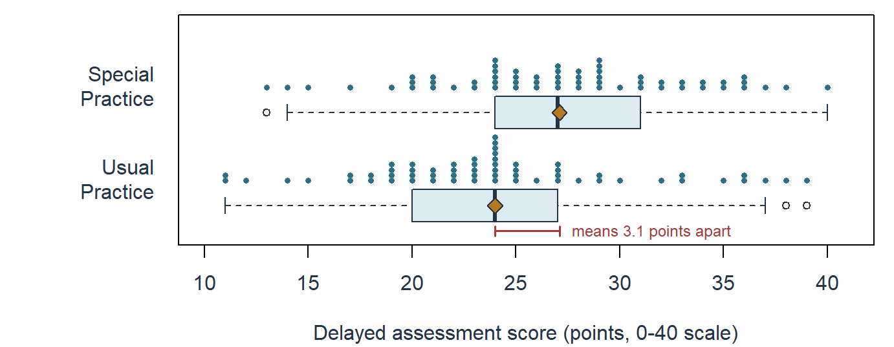
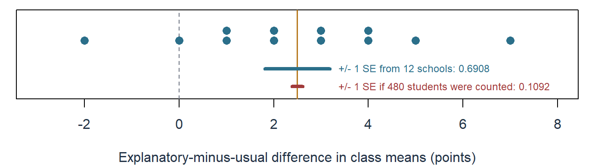
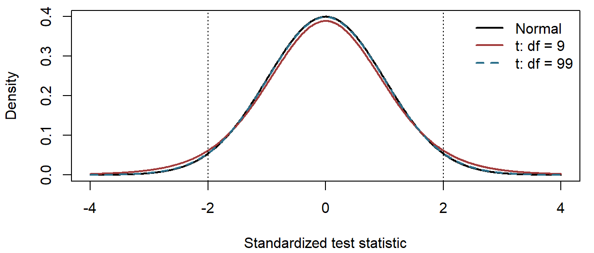
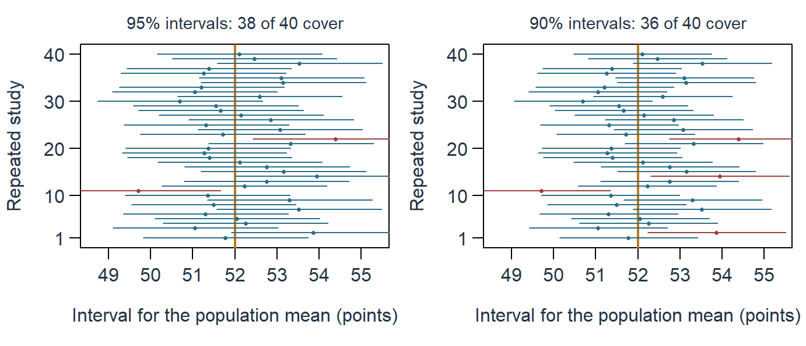
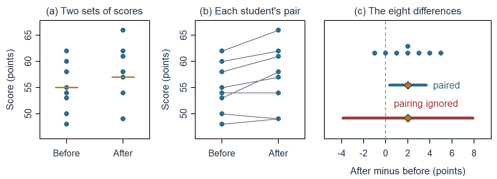
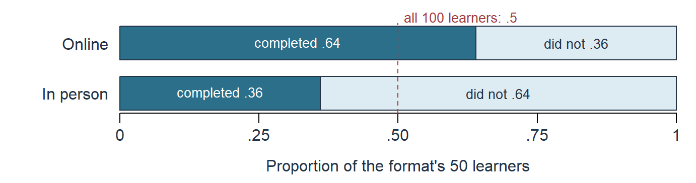
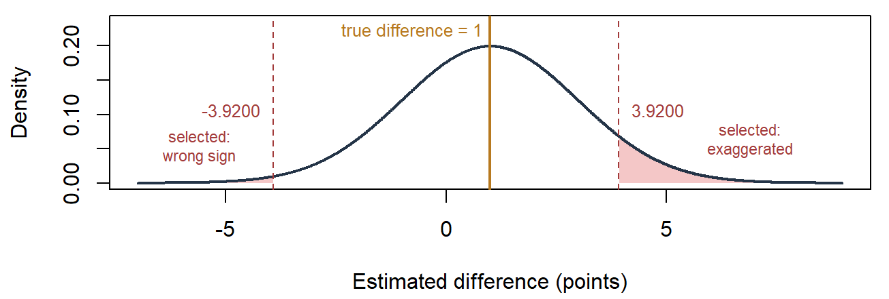

Estimates, Uncertainty, and Statistical Tests
NoteChapter overview
This chapter builds on the ideas Chapter 2 developed: population and sample, parameter and statistic, sampling distribution and standard error. We first say precisely what quantity a study seeks and which rule estimates it, and name the repetition behind its uncertainty. We then calculate standard errors for a mean and for a difference between two group means, build confidence intervals and read their confidence level, and carry out hypothesis tests, reading p-values and statistical significance. Each idea appears first with one mean and then with the continuing two-group comparison. The t tests for one sample, paired samples and two independent samples follow as one family: the equal-variance test used for the continuing study, then Welch’s test for groups whose spreads may differ. The same test logic then carries over to the association between two categorical variables, with the chi-square distribution as its reference, and a three-way table is read as two-way tables within layers. We close by weighing the size of a difference, the errors a decision rule can make and the choices made after seeing results, so that one qualified conclusion can be written.
A first-year course wanted to know whether a new practice format helps students remember what they have learned. Its instructors recruited 120 consenting students and randomly assigned 60 to Special Practice and 60 to Usual Practice. Both formats covered the same content over four sessions with equal total study time. Two weeks later, all 120 completed the same assessment, scored from 0 to 40. Special Practice averaged 27.1 points and Usual Practice 24.0, a difference of 3.1 points. This study is invented for the chapter.
Is 3.1 points a difference we should trust, and is it large enough to matter?
Section 1 names the target and the repetition behind its uncertainty; Sections 2, 3 and 4 then calculate a standard error, build a confidence interval and carry out a hypothesis test, each meeting its idea first with one mean and then with the practice study. Section 5 gathers the t tests into one family, Section 6 carries the same logic to the association between two categorical variables, and Section 7 returns to whether 3.1 points is large enough to matter.
From a Sample to an Estimate
The study and its estimated difference
The study asks about the mean effect of assignment to Special rather than Usual Practice on the delayed assessment among these 120 participants. Each part matters. Assignment is the intervention being compared; attending every session would be a different comparison. A mean effect summarizes the participants and allows individual responses to differ. The two-week assessment measures a specified outcome at a specified time. An effect on durable learning or among students elsewhere would require additional information.
The course team also chose a practical benchmark before seeing the outcomes. It treated two points as the smallest average difference that would change its recommendation: the marking scheme awards two points for one completed application task, and the new format adds little preparation time. The benchmark is course-specific, and Section 7 returns to it after uncertainty has been calculated.
| Item | Special Practice | Usual Practice |
|---|---|---|
| Assigned students | 60 | 60 |
| Delayed assessments observed | 60 | 60 |
| Delayed-assessment mean | 27.1 | 24.0 |
| Delayed-assessment SD | 6.0 | 6.4 |
The standard deviations describe differences among students’ scores within each group. Figure 1 draws the study’s own 120 records, so that the 3.1-point shift between the means can be set against the variation among students that makes an uncertainty calculation necessary. It shows why the difference needs more than arithmetic. The two groups overlap heavily: 17 of the 60 Usual Practice students scored at or above the Special Practice median of 27, and scores within each group spread over almost 30 points, with SDs of about six. Against that spread the means differ by 3.1 points. A different assignment of the same students would have placed different students in each group and produced a different difference, so the next sections ask how far such differences would vary. The figure also lets us check the records directly: no single score stands far from the rest, and the three scores beyond the whiskers lie within two points of the whisker ends. Measuring that variation begins by naming the target and the rule used to estimate it.
Estimand, estimator, estimation, and estimate
Chapter 2 distinguished the population and sample, introduced parameter and statistic, and explained sampling distributions and standard error. We now use those ideas to distinguish the quantity sought, the estimation rule, and the estimate obtained.
An estimand is the precisely specified quantity the question seeks. For this study, it is the mean assignment effect just described. To make the target explicit, let \(Y_{i1}\) be student \(i\)’s delayed score if assigned to Special Practice and \(Y_{i0}\) the score if assigned to Usual Practice. These are the student’s two potential outcomes. Only the one corresponding to the actual assignment is observed; Chapter 1 called the unobserved alternative the counterfactual outcome. The target is
\[ \Delta\mu=\frac{1}{n}\sum_{i=1}^{n}\{Y_{i1}-Y_{i0}\}. \]
Inside the braces is one student’s assignment effect. The sum adds all effects, and division by \(n=120\) takes their mean. Written this way, \(\Delta\mu\) is a mean difference over these 120 participants, not a population quantity. The notation allows different students to have different effects. We assume the two formats have a consistent meaning and one student’s assignment does not change another student’s outcome in a relevant way.
An estimator is a rule for using observed data to approximate this target. Here the rule subtracts the Usual assigned-group mean from the Special assigned-group mean. Estimation is the process of applying and checking that rule and characterizing its uncertainty. The estimate is the numerical value obtained:
\[ \widehat{\Delta\mu}=\bar y_1-\bar y_0=27.1-24.0=3.1\text{ points}. \]
The bar denotes a group mean, and the hat marks an estimate. The rule would stay the same under another admissible assignment, although the observed outcomes and the two group means could change. Reversing the subtraction gives \(-3.1\); it expresses the reverse comparison using the same information.
The observed difference exactly describes the two realized means. That description is known. The participant mean assignment effect remains unknown because no student reveals both potential outcomes. This is why an exact piece of arithmetic can still be an uncertain estimate.
| Object | Working definition | In this study | Common reading error |
|---|---|---|---|
| Estimand | The precisely specified quantity the question seeks | Mean delayed-score difference caused by Special rather than Usual assignment among the 120 randomized participants | Naming only “the treatment effect” |
| Estimator | The rule that would be applied in each admissible repetition | Special-group mean minus Usual-group mean | Treating the rule as the observed result |
| Estimation | Applying and checking the estimator for the specified estimand and characterizing the estimate and its uncertainty | Apply the mean-difference rule, verify its inputs and conditions, and quantify uncertainty | Treating estimation as another number |
| Estimate | The number the estimator produced in this study | \(27.1-24.0=3.1\) points | Reporting a number without units or direction |
| Parameter | The fixed feature named by the estimand under the chosen population or process interpretation | The participant-specific mean assignment contrast | Assuming it is the sample estimate or a universal truth |
| Statistic | A numerical function of observed data | A group mean, the 3.1-point estimate, or the 2.7372 test statistic | Assuming every statistic estimates the same thing |
| Standard error | The modeled spread of an estimator across the declared repetitions | 1.1325 points for the mean-difference estimator | Calling it variation among students |
A parameter is fixed within the specified population or process interpretation, but fixed does not mean universal: changing the participant set, outcome, time, or condition comparison may change the estimand and its parameter.
Name the repetition and working model
Uncertainty needs a description of what could have varied. In a sampling question, different people might have been selected from a population. In the special-practice study, the primary target concerns these same 120 participants. The relevant repetition assigns exactly 60 of them to each format again. Their potential outcomes remain fixed; the assigned groups and observed outcomes can change.
Random assignment makes the difference of assigned-group means useful for estimating the participant effect. It does not turn these consenting students into a representative sample of all first-year students. Inference about a wider population would need a stated model or sampling justification and an explicit extension of the target.
The numerical analysis uses a familiar working model: two independent groups whose scores share one population spread. Under that model the two observed variances estimate the same quantity, so Section 2 combines them into one pooled estimate, and the interval and test use a t reference with \(60+60-2=118\) degrees of freedom. The observed SDs, 6.0 and 6.4 points, are similar, and the two formats differ only in the practice activity, so a common spread is a reasonable starting assumption. Section 5 shows what changes when the groups’ spreads or sizes differ.
The model’s formulas come from independent sampling, but complete assignment of 60 of the 120 students does not make the two assigned-group means independent. The model therefore serves as an approximate calibration for this design rather than an exact randomization distribution. Section 2 explains what the familiar formula estimates here, and Appendix A gives the design-based variance identity and the distinction between an average-effect null and a sharp null.
Expectation, bias, and precision
Imagine applying the estimator over all repetitions allowed by the design or model. Its expectation, in Chapter 2’s sense, is the probability-weighted average of the values it would produce across those repetitions. If an estimator averages 3.4 points when the target is 3.0, its bias is \(3.4-3.0=0.4\) points. This describes the rule’s systematic displacement, not the error of one particular result.
Under complete random assignment and the stated potential-outcome conditions, each assigned-group mean is centered on the corresponding participant mean potential outcome. Their difference is therefore unbiased for the participant mean assignment effect:
\[ \operatorname{Bias}(\bar Y_1-\bar Y_0) =E_{\mathrm{assign}}(\bar Y_1-\bar Y_0)-\Delta\mu=0. \]
The equality does not say that this estimate, 3.1, equals the unknown effect. Precision concerns how tightly the estimator’s values cluster across assignments:
\[ SE(\bar Y_1-\bar Y_0)=SD(\bar Y_1-\bar Y_0\text{ across possible assignments}). \]
An unbiased rule can be imprecise; a tightly concentrated rule can be biased. A third useful consideration is how its behavior changes under unusual observations or departures from its conditions. A small SE under an unsuitable model can give unwarranted confidence.
Accuracy combines both qualities. The mean squared error, the average squared distance of an estimator from its estimand over the repetitions, adds the variance and the squared bias, \(\operatorname{MSE}(\widehat\theta)=\operatorname{Var}(\widehat\theta)+\operatorname{Bias}(\widehat\theta)^2\). An unbiased estimator with SD 2 has MSE \(2^2=4.00\), while one with SD 1 and bias 1.5 has MSE \(1+1.5^2=3.25\): under this criterion the biased but more precise rule lands closer on average, a verdict that depends on the criterion chosen.
Standard Errors
From the visible sampling pattern to the SE of a mean
Chapter 2, Sections 4.2–4.4, drew the pattern this section explains. Its waiting-time model had mean and SD both equal to 10 minutes, and its sampling-means figure set the individual waits beside 5,000 sample means at each of three sample sizes, 5, 30 and 100. The individual waits kept their 10-minute spread at every size, while the sample means varied less when each sample contained more observations. Increasing the number of simulated repetitions made their distribution easier to see; increasing the size of each sample changed its spread.
We can now explain that spread algebraically. Suppose \(Y_1,\ldots,Y_n\) are independent observations from the same distribution, with finite variance \(\sigma^2\). The sum has variance \(n\sigma^2\), because independent variances add. The mean divides that sum by \(n\); multiplying a variable by \(1/n\) multiplies its variance by \(1/n^2\). Thus
\[ \operatorname{Var}(\bar Y)=\frac{n\sigma^2}{n^2}=\frac{\sigma^2}{n}, \qquad SE(\bar Y)=\frac{\sigma}{\sqrt n}, \qquad \widehat{SE}(\bar Y)=\frac{s}{\sqrt n}. \]
The last expression estimates the unknown population SD with the sample SD. The estimated SE is calculated from one sample; the SE it estimates describes the mean across repetitions. Both are standard deviations, but of different distributions from the individual waiting times.
Applied to the waiting-time model, \(\sigma/\sqrt n\) gives the model SEs of Chapter 2’s sampling table, which the simulated sample means approximate, and its square root explains why halving an SE takes four times as many independent observations: at \(n=120\) the model SE is 0.9129 minutes, half its value at \(n=30\).
The estimated SE uses the sample SD \(s\), whose squared deviations from the sample mean are divided by \(n-1\). Chapter 2 noted that the sample mean is the value that makes the sum of squared deviations smallest; the deviations from it sum to zero, so once \(n-1\) of them are known the last is fixed. Appendix A derives both facts and shows why the divisor \(n-1\) makes \(s^2\) unbiased for \(\sigma^2\).
Uncertainty for a difference in means
For two independent samples, uncertainty comes from both means. Their variances add when one mean is subtracted from the other:
\[ \operatorname{Var}(\bar Y_1-\bar Y_0) =\frac{\sigma_1^2}{n_1}+\frac{\sigma_0^2}{n_0}. \]
The minus sign changes the direction of a difference, not the sign of a variance contribution. Independence removes the covariance term; the next subsection shows what happens when that condition fails.
Section 1.3 stated the working model for the practice study: two independent groups whose scores share one population spread. If both populations have the same variance \(\sigma^2\), the two contributions share that factor:
\[ \sigma_1^2=\sigma_0^2=\sigma^2:\quad \operatorname{Var}(\bar Y_1-\bar Y_0) =\sigma^2\left(\frac{1}{n_1}+\frac{1}{n_0}\right). \]
Each group’s sample variance then estimates the same \(\sigma^2\). The pooled variance \(s_p^2\) combines them, weighting each by its degrees of freedom, \(n-1\); its square root \(s_p\) is the pooled SD:
\[ s_p^2=\frac{(n_1-1)s_1^2+(n_0-1)s_0^2}{n_1+n_0-2}, \qquad \widehat{SE}(\bar y_1-\bar y_0)=s_p\sqrt{\frac{1}{n_1}+\frac{1}{n_0}}. \]
A larger group estimates the common spread from more observations, so its variance receives more weight. The denominator \(n_1+n_0-2\) counts the degrees of freedom that remain after estimating the two group means. For the practice study the pooled estimate therefore uses \(60+60-2=118\) df, which is why the interval in Section 3 and the test in Section 4 use a t reference with 118 df. Substitution gives
\[ \begin{aligned} s_p^2&=\frac{59(6.0^2)+59(6.4^2)}{118}=38.48, \qquad s_p=6.2032\text{ points},\\ \widehat{SE}(\bar y_1-\bar y_0)&=6.2032\sqrt{\frac{1}{60}+\frac{1}{60}} =1.1325\text{ points}. \end{aligned} \]
With 60 students in each group the pooled variance is simply the average of the two variances, in squared points, and the pooled SD lies between the two group SDs. The pooled SE is then algebraically the same as the square root of the two estimated mean variances added, \(\sqrt{s_1^2/n_1+s_0^2/n_0}\), so both routes give 1.1325 points. With unequal group sizes the two forms generally differ, and Section 5.4 returns to that case. Equal group sizes make the two SEs coincide; they do not by themselves establish equal population variances.
For the fixed 120 participants, the SE describes how the estimate would vary across the possible assignments of 60 students to each format. Re-assigning these records under the null of no effect, as Section 4.4 describes and the R support page runs, gives differences whose spread, 1.1671 points, is close to this 1.1325. The exact assignment variance subtracts a term for the variability of individual effects, which no record reveals, so the familiar estimated variance, and with equal group sizes the pooled squared SE, estimates an upper bound on that variance on average. Appendix A gives the identity (Bai et al., 2024). The working t reference also needs adequate information in each group and no dominating observations; random assignment alone does not make it exact.
Pairing, clustering, and sampling without replacement
The independence calculation fails in several common designs, and each failure is a covariance story. For any two quantities with finite variances,
\[ \operatorname{Var}(U-V)=\operatorname{Var}(U)+\operatorname{Var}(V) -2\operatorname{Cov}(U,V). \]
If paired measurements tend to be high or low together, subtracting within a pair removes some shared variation. In a separate illustration, suppose both measurements have SD 4, their covariance is 12, and there are 25 independent pairs. Let \(d\) be the within-pair difference. Then
\[ \begin{aligned} \operatorname{Var}(d)&=4^2+4^2-2(12)=8,\\ \widehat{SE}(\bar d)&=\sqrt{\frac{8}{25}}=0.5657,\\ \text{ignoring the pairing: }&\sqrt{\frac{16+16}{25}}=1.1314. \end{aligned} \]
The reduction comes from the positive covariance, not from a change in the number of observations. Actual paired-data analysis computes each difference and uses the SD of those differences. Negative covariance would change the result in the opposite direction.
Sampling without replacement from a fixed list also changes the variance, even when selection is random. For a simple random sample of \(n\) units from \(N\) fixed values whose variance \(\sigma^2\) uses the divisor \(N\),
\[ SE(\bar Y)=\frac{\sigma}{\sqrt n}\sqrt{\frac{N-n}{N-1}}. \]
The finite-population correction \(\sqrt{(N-n)/(N-1)}\) shrinks the SE as the sample covers more of the list, reaching zero at a census. In Chapter 2’s invented system of \(N=20{,}000\) students with \(\sigma=4.4259\) grade points, a simple random sample of 100 has SE 0.4426 grade points under independent sampling and 0.4415 with the correction factor .9975; with 400 students the factor is .9900. Other selection schemes need their own design-based calculation.
Clustering works in the opposite direction. Chapter 2, Section 4.4, showed that a sample of 4 schools with 25 students each spreads its means about twice as widely as a simple random sample of 100 students, and introduced the design effect,
\[ \mathrm{deff}=1+(m-1)\,\mathrm{ICC}, \]
for a mean from equal clusters of \(m\) units. The covariance terms explain it: each student has \(m-1\) school-mates whose scores covary with theirs by \(\mathrm{ICC}\times\sigma^2\), and those terms multiply the independent-sampling variance of the mean by \(\mathrm{deff}\). With \(m=25\) and Chapter 2’s intraclass correlation .1304, the design effect is 4.1299. The SE of the multistage mean, the simple-random-sample SE multiplied by the square root of the design effect, is then about 0.8972 grade points, close to the 0.8730 that Chapter 2’s simulation showed. The 100 students came from only four sampled schools; the SE follows the design, not the count of students.
An invented school-blocked extension of Chapter 1’s feedback study shows pairing and clustering together. Each of twelve participating schools contributed two classes of 20 students, and within every school one class was randomly assigned to explanatory feedback and the other to usual feedback; all 480 students took the same delayed 0–40 assessment. The class is the unit of assignment, and each school supplies one explanatory-minus-usual difference of its two class means. Figure 2 shows the twelve differences, \(-2\), 0, 1, 1, 2, 2, 3, 3, 4, 4, 5 and 7 points, with mean 2.5 and SD 2.3932. Their uncertainty comes from these twelve independent within-school comparisons: \(\widehat{SE}(\bar d)=2.3932/\sqrt{12}=0.6908\) points. Dividing the same SD by \(\sqrt{480}\), as if the 480 students rather than the twelve school comparisons were the independent units, would give 0.1092 points, an SE \(\sqrt{40}=6.3246\) times too small. That calculation mixes levels: the SD describes class-mean differences, whereas 480 counts students, who were assigned in whole classes. Section 5.2 completes the paired analysis of the twelve differences.

This is a blocked assignment: each school forms a block, and the two conditions are allocated within every block, so each comparison is made inside a school and school-level variation drops out of it. Stratified sampling instead selects units within population strata; it decides who enters a sample, whereas blocking allocates conditions after entry, and grouping records by school does not make either mechanism imply the other.
Concentration, shape, and the conditions behind them
Chapter 2’s sampling-means figure shows two different things happening as the sample size grows. The law of large numbers describes concentration: for independent, identically distributed observations with a finite mean, the chance that \(\bar Y_n\) lies farther than any fixed distance from \(\mu\) shrinks toward zero. The central limit theorem describes shape: with finite variance \(\sigma^2\), the standardized mean approaches a standard Normal distribution,
\[ \frac{\bar Y_n-\mu}{\sigma/\sqrt n}\ \text{approaches}\ N(0,1) \quad\text{as } n \text{ grows}. \]
The individual waiting times in the figure’s first panel stay skewed at every sample size; only the means concentrate and become nearly Normal. Both results concern increasing sample size, not repeatedly simulating the same small sample, and both need conditions: strong dependence, extreme tails, or an observation that dominates the mean can make a Normal approximation poor, and no universal sample-size cutoff settles the issue for every distribution and design. The SE formula answers how wide a sampling distribution is; its approximate shape then helps choose an interval or test.
Confidence Intervals and Confidence Level
Estimate, SE, critical value, and interval
A confidence interval combines an estimate with a multiple of its SE. For the symmetric procedures used here,
\[ \text{estimate}\pm\text{critical value}\times\text{standard error}. \]
The SE supplies a scale. A critical value says how far to extend in SE units to obtain the intended coverage under a reference distribution. Chapter 2 introduced the standard Normal distribution, centered at zero with SD one. Its .975 quantile is about 1.96: .025 of the probability lies beyond that point, and another .025 lies below \(-1.96\).
The Normal critical value suits a mean whose population SD is known independently of the sample. Usually the SD must be estimated from the same observations, and that estimate is itself uncertain. A t distribution accounts for this extra uncertainty. It is symmetric around zero, like the standard Normal, but has heavier tails. Its degrees of freedom (df) index how much information the estimated SD carries; for one mean they equal \(n-1\), the divisor of the sample variance (Appendix A). With few df the tails are heavy and the critical value is larger; as df increase, the t reference approaches the standard Normal. An estimated spread does not make every statistic exactly t-distributed: the exact one-mean result requires independent Normal sampling, and the two-group reference for the practice study is an approximate working calibration (Section 1.3).
For a separate, invented illustration, suppose a simple random sample of 25 students from a large district completes a reading scale whose published reference mean is 50 points. The sample mean is \(\bar x=52\) points and the SD is \(s=5\) points. The estimand is the district’s population mean score, \(\mu\). Treating the scores as independent observations from an approximately Normal population, Section 2.1 gives \(\widehat{SE}(\bar X)=5/\sqrt{25}=1\) point. Because the SD is estimated from the same 25 scores, the reference is a t distribution with \(25-1=24\) degrees of freedom. Its .975 quantile, 2.064 in a t table, leaves .025 in each tail:
\[ 52\pm2.064(1)=52\pm2.064=[49.936,\ 54.064]\text{ points}. \]
The interval estimates the district mean in points under the sampling model. Its estimand and repetition differ from the participant assignment effect of the practice study.
The 95% reference values below leave .025 in each tail. The table gives full-precision quantiles, so the t-table value 2.064 appears as 2.0639, and its third row previews the Special Practice reference of Section 3.4.
| Reference | 95% critical value | Role in the examples |
|---|---|---|
| Standard Normal | 1.9600 | Mean with a population SD known independently of the sample, under a suitable Normal model |
| t with 24 df | 2.0639 | The one-mean illustration: SD estimated from 25 independent Normal observations |
| t with 118 df | 1.9803 | The Special Practice comparison under the equal-variance working model (Section 3.4) |
The t curves in Figure 3 spread more probability into their tails than the standard Normal, most visibly with few degrees of freedom, which is why their critical values are larger.

The procedure and its conditions determine the reference. Choosing the smaller critical value merely to narrow an interval would change the procedure without justification.
Confidence level and coverage
The confidence level names the procedure’s target coverage: a 95% procedure aims to cover the fixed estimand in 95% of its repeated applications under its conditions. The level enters the calculation through the critical value. For the district sample, a 90% interval uses the t quantile that leaves .05 in each tail, 1.711 in a t table, instead of 2.064.
Predict the change before calculating. The estimate and its SE stay the same and only the multiplier becomes smaller, so the 90% interval must be narrower, as Table 4 in Section 3.4 confirms. The 95% interval contains the published reference value 50, whereas the 90% interval, [50.289, 53.711], excludes it; Section 4.3 uses this pair to connect intervals with tests.
What does the target coverage describe? Figure 4 simulates 40 district samples under a stipulated population mean of 52 points and a known SE of 1, and gives each estimate an interval of \(\pm1.9600\) SEs at 95% and \(\pm1.6449\) SEs at 90%.

Across repetitions the samples, estimates and endpoints vary while the target stays fixed. A miss involves no calculation error: an estimate that happens to fall far from the population mean carries its interval with it, so even a valid 95% procedure misses occasionally. The two panels of Figure 4 use the same 40 estimates, and only the multiplier changes. Studies 2 and 14, whose estimates fell between 1.6449 and 1.9600 SEs from 52, are covered at 95% but missed at 90%: a lower level buys a narrower interval at the price of more misses. A batch of 40 need not show exactly 38 or 36 successes; the target coverage describes the procedure over many repetitions. Because the display uses a simplified Normal model with known SE, its coverage is a property of the illustration, and fixing the mean at 52 is a display choice rather than a claim about the unknown district mean.
Once an interval has been calculated, the coverage statement describes the success rate of the interval-producing procedure; it does not assign a 95% probability to the fixed estimand, and it does not say that 95% of the district’s students score between 49.936 and 54.064. Read the endpoints in points as values compatible with the observations under the procedure: the 95% interval allows district means slightly below the reference value 50 as well as means near 54 points, with no natural cliff at its rounded endpoints.
What a narrower interval can and cannot resolve
Holding the model and data fixed, a higher confidence level needs a wider interval. More outcome variability generally widens it, while more relevant information narrows it, and changes in the design or variance estimator can also change its width. The 90% interval of Section 3.2 is narrower because it asks for less coverage, not because the sample holds more information: changing the level adds no observations and changes neither the estimate nor its SE. An interval also quantifies only the uncertainty its procedure represents. A narrow interval can coexist with systematic selection, poor measurement, unmodeled dependence, unavailable outcomes, or an unsupported generalization. Measuring the wrong outcome very consistently can yield a small SE for the wrong target, and adding many pupils from a few jointly assigned classes does not reproduce the information from the same number of individually assigned pupils. Precision helps only when the procedure remains aligned with the question and design.
The Special Practice interval
The same construction applies to the continuing study. Its estimate is 3.1 points, Section 2.2 gave the pooled SE 1.1325 points, and the equal-variance t reference has 118 df, whose 95% critical value is 1.9803. Under the equal-variance working model, whose calibration is approximate for the assignment design (Section 1.3), the interval is
\[ (\bar y_1-\bar y_0)\pm t_{.975,\,118}\,\widehat{SE}(\bar y_1-\bar y_0) \approx3.1\pm1.9803(1.1325) \approx[0.8572,\ 5.3428]\text{ points}. \]
The endpoints retain the Special-minus-Usual direction and assessment-point units. They allow positive effects near one point and effects above five points. The data therefore give a useful estimate without pinpointing its magnitude.
Changing only the confidence level gives the intervals below; in each example the estimate, the SE and the observations stay the same.
| Example and confidence level | Critical value | Margin | Interval in points | Full width |
|---|---|---|---|---|
| District mean, 90% | 1.711 | 1.7110 | [50.2890, 53.7110] | 3.4220 |
| District mean, 95% | 2.064 | 2.0640 | [49.9360, 54.0640] | 4.1280 |
| Special Practice difference, 90% | 1.6579 | 1.8776 | [1.2224, 4.9776] | 3.7552 |
| Special Practice difference, 95% | 1.9803 | 2.2428 | [0.8572, 5.3428] | 4.4855 |
The district critical values are the supplied t-table values; the Special Practice values are full-precision quantiles of t with 118 df. In both examples the smaller critical value narrows the 90% interval without adding observations or reducing the SE; the narrower interval has a lower coverage target. Both Special Practice intervals lie above zero and span the two-point benchmark: they can support a positive mean assignment effect under the procedure while leaving its practical importance to Section 7.
Hypothesis Tests, p-Values and Significance
Hypotheses, test statistics, and reference distributions
A statistical hypothesis makes a proposition about a target. Return to the district sample. A natural question asks whether the district’s mean differs from the published reference value. A null hypothesis states the reference proposition, \(H_0:\mu=50\); the two-sided alternative hypothesis \(H_A:\mu\ne50\) allows a difference in either direction. A test statistic measures the estimate’s departure from the null value in SE units:
\[ t=\frac{\bar x-\mu_0}{s/\sqrt n}=\frac{52-50}{5/\sqrt{25}}=\frac{2}{1}=2, \qquad df=24. \]
The sample mean lies two estimated SEs above 50. If the null and the sampling model hold, the statistic follows a t distribution with 24 degrees of freedom, its reference distribution.
Many test statistics share this common form:
\[ \text{test statistic}= \frac{\text{estimate}-\text{null value}} {\text{standard error under the test procedure}}. \]
The numerator measures departure in outcome units. The denominator expresses how large that departure is relative to the procedure’s uncertainty. The reference distribution then shows which values of the statistic would be common, and which unusual, if the null and the procedure’s conditions held. Equivalently, subtracting 50 from every score creates a centered variable whose null mean is zero; the question stays the same. A test is the procedure for assessing the null proposition, while a test result is the numerical output obtained from the data.
Tail areas, p-values, and statistical significance
The p-value comes from a tail area of the reference distribution: the area beyond the observed statistic, in the direction or directions the alternative names. The district alternative counts departures in both directions, so the two tails beyond \(\pm2\) are added:
\[ p=P(T_{24}\le-2)+P(T_{24}\ge2)=2P(T_{24}\ge2)=.0569, \qquad P(T_{24}\ge2)=.0285. \]
The symbol \(T_{24}\) denotes a variable with the reference t distribution on 24 df. Software or a reference table supplies the area; each tail holds .0285.
A p-value is a conditional tail probability. If the null and the procedure’s conditions hold, a result at least as far from the null value as the one observed would occur with probability .0569 here. A significance level, \(\alpha\), is a threshold chosen before the result is inspected; a level-.05 rule rejects the null when the p-value is below .05. Because .0569 is not below .05, the district result is not statistically significant at the .05 level. The test does not reject 50, and that decision does not show the mean equals 50.
The label statistically significant records a comparison with the threshold. The p-value calculation starts by assuming the null for its reference; it does not calculate the probability that the null itself is true (Wasserstein & Lazar, 2016). Other values, including means near 54, remain compatible with the district data. The size of a difference, its importance, and the probability that a claim is true are different questions.
The district test is two-sided because either direction counts. A one-sided test needs an alternative whose direction was chosen before the result was inspected. Had the study specified \(H_A:\mu>50\) in advance, its p-value would be the single upper tail, .0285. Choosing that tail after seeing a positive estimate, so that .0285 falls below .05, changes the testing procedure and its error calibration. A large departure in the opposite direction does not support a one-sided alternative either.
A test and an interval built from one procedure
A two-sided test at level \(\alpha\) and a \(100(1-\alpha)\%\) interval built from the same procedure agree about any null value. The district sample shows the agreement at two levels. With the null value 50, the statistic is the 2 of Section 4.1. Against the supplied two-sided 95% critical value 2.064 the statistic falls short, and the interval [49.936, 54.064] contains 50: the level-.05 test does not reject. Against the 90% critical value 1.711 the statistic exceeds the cutoff, and the interval [50.289, 53.711] excludes 50: a level-.1 test chosen in advance would reject. In both cases the interval contains exactly the null values the matching two-sided test would not reject.
Algebra explains the agreement. A null value \(\theta_0\) lies outside the interval \(\widehat\theta\pm t^*\widehat{SE}\) exactly when its distance from the estimate exceeds the margin, \(|\widehat\theta-\theta_0|> t^*\widehat{SE}\). Dividing both sides by the SE gives the test’s comparison of its statistic with the critical value:
\[ \text{the null value }\theta_0\text{ lies outside }\widehat\theta\pm t^*\widehat{SE} \quad\Longleftrightarrow\quad \frac{|\widehat\theta-\theta_0|}{\widehat{SE}}>t^*. \]
The interval is therefore the set of null values the test would not reject. The agreement requires the same estimator, SE, reference distribution, sidedness, and comparison, and two calculations aligned in this way can still share an inadequate model. Nor does the correspondence at each level license choosing the level after seeing where 50 falls: the 90% rejection counts only if that level was chosen before the data were examined.
The Special Practice test
Return to the continuing study. For two populations, the null \(H_0:\Delta\mu=0\) concerns \(\Delta\mu=\mu_1-\mu_0\), the difference between their means; the subscripts 1 and 0 identify the two groups, here Special and Usual, in that order, so \(\mu_0\) now names a group mean rather than the one-mean null value of Section 4.1. For Special Practice, \(\Delta\mu\) remains the fixed participants’ mean assignment effect defined in Section 1.2, and its null preserves that target:
\[ H_0:\Delta\mu=0\qquad\text{versus}\qquad H_A:\Delta\mu\ne0. \]
The null says the participant mean assignment effect is zero; the alternative allows either a positive or a negative effect. Under the equal-variance working model, the statistic divides the estimate by the pooled SE of Section 2.2 and uses the t reference with 118 df:
\[ t=\frac{\widehat{\Delta\mu}-0}{\widehat{SE}(\bar y_1-\bar y_0)} \approx2.7372,\qquad df=118,\qquad p=2P(T_{118}\ge|t_{\mathrm{obs}}|)\approx.0072. \]
The estimate is about 2.7372 estimated SEs above zero. Its upper-tail probability is .0036, and the two-sided test adds the equally extreme negative tail, giving .0072. The null and the procedure’s conditions define the reference; the observed statistic selects the tail area. At \(\alpha=.05\) the result is statistically significant, and the 95% interval of Section 3.4, [0.8572, 5.3428], excludes zero, as Section 4.3 predicts.
![Three panels. The first shows a bell-shaped t density with 118 degrees of freedom on a test-statistic axis from about minus 5 to 5; dashed grey lines at minus and plus 1.9803, labelled at the top, mark the .05 critical values, the regions beyond them are shaded light red, and red marks labelled minus and plus 2.7372 stand farther out, where the tails are too thin to see. The second enlarges the upper tail from 1.6 to 4.6 on a density axis up to 0.12: the light region beyond the critical value is labelled critical 1.9803, .025 beyond, and the dark red region beyond the observed statistic is labelled observed 2.7372, .0036 beyond. The third shows the estimate 3.1 with a 95 percent interval from 0.8572 to 5.3428 and a 90 percent interval from 1.2224 to 4.9776, beside a dashed line at zero, labelled no difference, and a dotted line at the two-point benchmark; both intervals exclude zero and cross the benchmark.](chapter_03_files/figure-html/fig-test-interval-1.png)
Panel (a) of Figure 5 draws the reference the test uses, as Section 4.2 did in words for the district mean. The dashed lines at \(\pm1.9803\) mark the two-sided .05 critical values, the same multiplier that built the 95% interval in Section 3.4, and the light regions beyond them hold .025 each. The observed statistic lies beyond them, so the level-.05 test rejects. The tails beyond \(\pm2.7372\) are too thin to see at this scale, so panel (b) enlarges the upper tail: the dark area beyond the observed statistic holds .0036, the matching lower tail holds the same, and together they give the two-sided p-value .0072. Panel (c) reads the same result as intervals: the 95% and the 90% interval both exclude zero, and both span the two-point benchmark.
The same p-value can be checked against the design itself. If no student’s score depended on format, re-assigning the 120 records at random to two groups of 60 would reproduce the design’s repetition under that null, and in 10,000 such re-assignments a share of .0077 gave a difference at least 3.1 points from zero, close to the t test’s .0072; the chapter’s R support page runs them. The two need not agree exactly, because the re-assignments test the stronger null that no student’s score depends on format, using the actual records, whereas the t test models the average effect (Appendix A). Such re-assignments form a null distribution, built by imposing the null on the design; a bootstrap distribution (Appendix B) instead resamples the data without imposing a null and describes the estimate’s variability, so it is not a reference for testing zero.
What moves the test statistic? Table 5 starts from the Special Practice summaries and changes one input at a time, the last row two.
| Change from the observed study | SE (points) | t (df) | Two-sided p | 95% interval (points) |
|---|---|---|---|---|
| As observed: difference 3.1, SDs 6.0 and 6.4, 60 per group | 1.1325 | 2.7372 (118) | .0072 | [0.8572, 5.3428] |
| Spread 1.5 times larger: SDs 9.0 and 9.6 | 1.6988 | 1.8248 (118) | .0706 | \([-0.2641,\ 6.4641]\) |
| Smaller groups: 15 per group | 2.2651 | 1.3686 (28) | .1820 | \([-1.5398,\ 7.7398]\) |
| Separation halved: difference 1.55 | 1.1325 | 1.3686 (118) | .1737 | \([-0.6928,\ 3.7928]\) |
| Separation halved, 240 per group | 0.5663 | 2.7372 (478) | .0064 | [0.4373, 2.6627] |
The statistic divides the separation between the means by an SE that grows with the spread of the scores and shrinks with the group sizes, \(\widehat{SE}=s_p\sqrt{1/n_1+1/n_0}\). Making both SDs 1.5 times larger multiplies the SE by 1.5, and the same 3.1-point difference no longer excludes zero, \(p=.0706\); a quarter of the students doubles the SE, \(p=.1820\); halving the separation halves the statistic while the SE stays the same, \(p=.1737\). The last row halves the separation and quadruples the groups. Its statistic returns exactly to 2.7372, so a study with half the effect and four times the students is just as significant, \(p=.0064\) on 478 df, yet its interval, [0.4373, 2.6627], is centered at 1.55 points, below the two-point benchmark. A test statistic measures separation relative to its SE, not the size of an effect; the estimate, its interval and the benchmark carry the magnitude.
Calling the result statistically significant records that .0072 is below the advance threshold .05. It supplies neither the size of the effect nor a study-specific probability of having made an error. The table below collects six common mistranslations of the displayed p-value and their repairs; reporting the estimate and interval alongside the p-value keeps these distinctions visible.
| Mistranslation | Why it fails | Repair |
|---|---|---|
| “There is a 0.72% chance the null is true.” | The p-value conditions on the null; it does not assign probability to it | Under the zero-contrast null and procedure, results at least this incompatible have probability .0072 |
| “There is a 0.72% chance the result happened by chance.” | Chance is not a complete model; the result already happened | Name the null, design, statistic, and reference process |
| “The study has a 99.28% chance of replicating.” | Replication depends on the effect, design, sample, and analysis | Report the current estimate and uncertainty; discuss replication separately |
| “The effect is large or important because \(p=.0072\).” | A p-value is not an effect-size or importance measure | Interpret 3.1 points and its interval against a defensible benchmark |
| “The study’s false-positive probability is 0.72%.” | A long-run error rule and a data-dependent p-value differ | State any prespecified decision rule; avoid a posterior error claim |
| “The p-value keeps its usual meaning after this outcome or model was selected from inspected results.” | The selection rule is part of the procedure and can alter calibration | Report the family of analyses and whether the comparison was chosen in advance; interpret the selected result accordingly |
t Tests for One, Paired and Two Independent Samples
Sections 3 and 4 used two members of a family of named t tests, one for a single mean and one for the difference between two group means. The members differ in which observations carry the information, how the SE is calculated, and which df the reference uses; their shared name does not make paired and independent data interchangeable. The table lists them in the order this section teaches them.
| Procedure | Data and null | SE and reference |
|---|---|---|
| One-sample t | One quantitative sample; \(H_0:\mu=\mu_{\mathrm{null}}\) | \(s/\sqrt n\); \(df=n-1\) |
| Paired-samples t | Correctly matched observations, independent pairs; \(H_0:\mu_D=0\) | \(s_d/\sqrt n\) on pair differences; \(df=n-1\) |
| Equal-variance two-sample t | Two independent samples with a common population variance; \(H_0:\mu_1-\mu_0=0\) | \(s_p\sqrt{1/n_1+1/n_0}\); \(df=n_1+n_0-2\) |
| Welch’s unequal-variance t | Two independent samples whose variances may differ; same mean null | \(\sqrt{s_1^2/n_1+s_0^2/n_0}\); approximate df estimated from the data |
Two of these procedures, the one-sample t test (Section 5.1) and the equal-variance two-sample t test (Section 5.3), are followed after their worked result by a box titled Justifying the analysis, and Section 6 gives one to the chi-square test of association. Chapter 1, Section 6.1, used the word justification for the reasons and conditions invoked to support a comparison, analytical move or interpretation, and its Section 3.4 introduced the assumptions such reasons invoke. The box makes that justification concrete for one analysis in four labelled lines. Target states what the number estimates, in its units and for which units. Conditions sorts what the analysis relies on into three kinds: conditions secured by design, such as random assignment, random sampling, pairing and independent units; model assumptions the procedure adds, such as a common spread or the shape of a sampling distribution; and choices and defaults the analyst sets, such as the sidedness, the confidence level and the variance model. Check gives the evidence the data offer about each model assumption and the result that would change the decision, or says plainly that the data cannot check it. Bound states what the result supports and what it does not. The paired and Welch t tests are variants of the procedures with boxes, so each states in a sentence or two what changes, and a later use of any procedure refers to its box and adds only what changes. Appendix B collects the five procedures in one table with their conditions and the usual response when a condition fails.
One-sample t test and its z counterpart
The district calculation of Sections 3 and 4 is a one-sample t test with its matching interval: SE 1 point, a t reference with 24 df, the statistic 2, the two-sided p-value .0569 and the 95% interval [49.936, 54.064]. A close relative uses a known SD instead of an estimated one.
Chapter 2 used a z score, \(z_i=(x_i-\mu)/\sigma\), to locate one observation in population SD units. Sample standardization, \((x_i-\bar x)/s\), describes an observation relative to its sample. Neither operation makes the original distribution Normal. For a mean, the quantity being standardized is instead its estimator, so the denominator is an SE:
\[ z=\frac{\bar x-\mu_0}{\sigma/\sqrt n},\qquad t=\frac{\bar x-\mu_0}{s/\sqrt n},\qquad df=n-1. \]
The one-sample z test uses a population SD known independently of the sample. The one-sample t test estimates that SD with \(s\). Its exact t reference requires independent observations from a Normal population; suitable distributional conditions and enough information can support an approximation more broadly. A large sample does not turn an unknown SD into a known one or remove dependence.
For the same statistic 2, the two-sided probabilities beyond the lines of Figure 3 in Section 3.1 are .0455 under the Normal, .0766 under t with 9 df and .0482 under t with 99 df. If the district’s population SD were known independently to be 5 points, the z test would give .0455 rather than the t test’s .0569. The change comes from the reference tails, not from the arithmetic of the statistic, and only genuine knowledge of the SD justifies the z reference; falling on the other side of .05 does not. Changing a study’s sample size can also change its SE and observed statistic, which is a separate comparison.
TipJustifying the analysis
- Target: The mean reading score \(\mu\) of the district’s students, in scale points, compared with the published reference value 50.
- Conditions:
- Secured by design: A simple random sample of 25 students from a large district, each measured once, so the scores are independent observations.
- Model assumptions: An approximately Normal population of scores, so that the t reference with 24 df applies to a mean whose SD is estimated from the same 25 scores.
- Choices and defaults: A two-sided alternative, \(H_A:\mu\ne50\), chosen in advance; 95% confidence and level .05; one planned test; all 25 scores observed.
- Check: The summaries, mean 52 and SD 5, cannot show the shape of the scores. With the 25 scores in hand, strong skew or one score far from the rest would weaken the t approximation and call for a bootstrap comparison (Appendix B). The decision is close, \(p=.0569\) against .05, so the reference must follow from the conditions: the z reference’s .0455 would need an SD known independently of the sample.
- Bound: The interval [49.936, 54.064] describes the district mean under the sampling model: means from just below 50 to about 54 points remain compatible, and the level-.05 test does not reject 50. The result does not show that the mean equals 50, and it concerns this district only.
Paired-samples t test
In a paired design each observation in one set is matched with one in the other, most often because the same person is measured twice. The pair, not the single score, is then the unit that carries the information. Eight invented students, separate from the Special Practice records, completed the same assessment before and after a short practice session (Table 8). Define each student’s difference as \(d_i=\mathrm{after}_i-\mathrm{before}_i\), keeping the person and the subtraction direction before any summary is calculated.
| Student | Before | After | Difference |
|---|---|---|---|
| 1 | 50 | 49 | \(-1\) |
| 2 | 54 | 54 | 0 |
| 3 | 48 | 49 | 1 |
| 4 | 60 | 62 | 2 |
| 5 | 55 | 57 | 2 |
| 6 | 58 | 61 | 3 |
| 7 | 62 | 66 | 4 |
| 8 | 53 | 58 | 5 |
Once the differences are formed, the paired-samples t test is the one-sample t test of Section 5.1 applied to them: the null is a zero mean change, \(H_0:\mu_D=0\), the SE is \(s_d/\sqrt n\) for the \(n\) pairs, and the reference is t with \(n-1\) df. For the eight students the mean change is 2 points with SD 2, so \(\widehat{SE}(\bar d)=0.7071\), \(t(7)=2.8284\), \(p=.0255\), and the 95% interval is [0.328, 3.672] points.
The justification of the one-sample t test in Section 5.1 carries over with the pair as the unit: the design forms the pairs, the eight pairs must be independent of one another, which rests on how the students were chosen, and the near-Normal shape concerns the differences, so they, not the two sets of scores, are what to inspect. The bound changes too: without an untreated comparison, a mean change of 2 points does not separate the practice session from time trends, repeated testing or other changes between the two measurements.
Why must the pairing be kept? The variance identity of Section 2.3 gives \(\operatorname{Var}(Y_{\mathrm{after}}-Y_{\mathrm{before}}) =\operatorname{Var}(Y_{\mathrm{after}})+\operatorname{Var}(Y_{\mathrm{before}}) -2\operatorname{Cov}(Y_{\mathrm{after}},Y_{\mathrm{before}})\): when a student’s two scores rise and fall together, the covariance term removes the variation they share.

Figure 6 shows what the covariance term does. Panel (a) is what an analysis of two independent groups sees: two overlapping sets of eight scores whose spread, SDs of about 5 and 6 points, swamps a 2-point shift. Panel (b) restores the pairing: students who scored high before also scored high after, so the lines run nearly parallel and the scores correlate at .9599. The differences in panel (c) keep the change and drop the shared between-student variation. Their interval is short and excludes zero, whereas analysing the same scores as two independent groups gives an SE of 2.7451 rather than 0.7071 and the interval \([-3.8877,\ 7.8877]\), which spans zero. The data did not change; the relevant variation did. Because the pairing comes from how the scores were obtained, only the paired analysis describes their uncertainty. Chapter 4’s term pairwise comparisons refers to several group contrasts, a different use of the word.
The school-blocked design of Section 2.3 is a paired design too: each school supplies one explanatory-minus-usual difference of class means. The paired t procedure, using an approximate working-model calibration for the twelve differences, gives \(t(11)=3.6187\), \(p=.004\) and the 95% interval [0.9795, 4.0205] points. Here each pair is a school, and random assignment of the two classes within each school supports a causal reading for these participating schools, which the before-and-after scores could not; the schools were not sampled, so the result does not by itself reach other schools.
Equal-variance two-sample t test
The procedure used for Special Practice throughout Sections 3 and 4 is the equal-variance two-sample t test, also called the pooled or Student’s two-sample t test. Its model has two independent groups whose populations share one variance. With Normal populations its t reference is exact; with adequate group sizes and moderate departures from Normality it is a good approximation. Its SE is the pooled SE of Section 2.2, \(s_p\sqrt{1/n_1+1/n_0}\), and its reference has \(n_1+n_0-2\) df. For Special Practice, Sections 2.2, 3.4 and 4.4 have already produced the complete result: SE 1.1325 points on 118 df, \(t=2.7372\), \(p=.0072\) and the 95% interval [0.8572, 5.3428] points. The new step is to read the procedure’s conditions against the design, which the box below does.
TipJustifying the analysis
- Target: The mean effect \(\Delta\mu\) of assignment to Special rather than Usual Practice on the delayed 0–40 assessment, in points, for these 120 participants.
- Conditions:
- Secured by design: Random assignment of 60 students to each format, which supports a causal comparison among the participants; different students in the two groups.
- Model assumptions: One population spread shared by the two groups; a near-Normal sampling distribution for the difference in means; no relevant interference, so one student’s format does not change another’s score. The t reference with 118 df is an approximate calibration for the assignment design (Section 1.3).
- Choices and defaults: Special minus Usual; a two-sided test of zero; 95% confidence and level .05; the equal-variance model, chosen from the design before the analysis; one comparison and the two-point benchmark, both fixed before the outcomes were seen; complete follow-up of all 120, so no missing scores to handle.
- Check: The SDs, 6.0 and 6.4 points, are similar, and with 60 students in each group the pooled and unpooled SEs are identical whatever the spreads; Welch’s procedure gives the same statistic with 117.5119 df and the same p-value to four decimals (Section 5.4). The records in Figure 1 (Section 1.1) show no score dominating either mean: the three scores beyond the whiskers, 13 in Special Practice and 38 and 39 in Usual Practice, lie within two points of the whisker ends, and each mean averages 60 scores. Interference cannot be checked from the scores; it rests on how the sessions were run.
- Bound: A positive mean assignment effect among these participants is supported, 3.1 points, 95% CI [0.8572, 5.3428]. Its practical importance against the two-point benchmark remains open (Section 7.1), and the result does not speak to attendance, mechanisms, longer-term learning or students elsewhere.
A results sentence names the procedure and reports the df beside the statistic:
Under the equal-variance working model, Special Practice scored 3.1 points higher on average, 95% CI [0.8572, 5.3428], t(118) = 2.7372, p = .0072.
Welch’s unequal-variance t test
Pooling assumes that both groups estimate one population variance. Welch’s unequal-variance t test drops that assumption and keeps each group’s own variance in the SE (Welch, 1947):
\[ \widehat{SE}_{\mathrm{Welch}}=\sqrt{\frac{s_1^2}{n_1}+\frac{s_0^2}{n_0}}, \qquad t=\frac{\bar y_1-\bar y_0}{\widehat{SE}_{\mathrm{Welch}}}. \]
Its reference is an approximate t distribution whose df, the Welch–Satterthwaite degrees of freedom, are estimated from the two variance contributions \(s_1^2/n_1\) and \(s_0^2/n_0\). They lie between \(\min(n_1,n_0)-1\) and \(n_1+n_0-2\). When one group’s mean carries almost all the uncertainty, they fall toward that group’s own \(n-1\), which is the lower bound when it is the smaller group. They reach the upper bound, the equal-variance test’s df, only when each contribution is proportional to its group’s df, \(n_1-1\) or \(n_0-1\), as with equal sizes and equal SDs. Software computes them, and fractional df describe the approximation rather than counting people.
Welch’s test is therefore not simply a more cautious version of the equal-variance test: it asks the same question under a weaker assumption, and how much the choice matters depends on the design. With equal group sizes the two SEs and t statistics coincide (Section 2.2), but the df differ unless the two SDs are equal too. As both groups grow the p-value difference usually diminishes, and Welch’s test gives up little power; decisions near the cutoff can still differ. Small groups with very unequal spreads make the difference more pronounced. With five students per group, SDs 10 and 1, and \(t=2.5\), the equal-variance test gives \(p=.0369\) on 8 df and Welch’s test \(p=.0655\) on 4.08 df. With equal spreads but unequal sizes Welch’s test gives up a little power. With unequal group sizes and unequal spreads, however, the pooled variance, a df-weighted average dominated by the larger group, misstates the variance of the smaller group’s mean, and the equal-variance test’s error rate drifts in one direction or the other.
For a separate, invented comparison, suppose a district draws two independent random samples of students who took the same 0–40 assessment: 10 from a small intensive-support programme and 40 from its usual programme. The intensive group averaged 29 points with SD 8; the usual group averaged 24 with SD 4. The estimand is the difference between the two programmes’ population mean scores, a comparison of populations rather than an effect of assignment. Before seeing these scores, staff expected a wider spread in the intensive programme, which enrols students with a broad range of prior attainment and may help some of them much more than others. Table 9 sets the two analyses side by side.
| Result for the 5-point difference | Equal-variance t | Welch’s t |
|---|---|---|
| SE of the difference (points) | 1.7678 | 2.6077 |
| t statistic | 2.8284 | 1.9174 |
| Degrees of freedom | 48 | 10.151 |
| Two-sided p-value | .0068 | .0837 |
| 95% interval (points) | [1.4457, 8.5543] | \([-0.7986,\ 10.7986]\) |
The equal-variance SE is much smaller than Welch’s because the pooled variance lies near the usual group’s small spread, which supplies 39 of its 48 df, and pooling lends that small spread to the intensive group’s mean. The equal-variance interval therefore excludes zero while Welch’s includes it. Welch’s df, 10.151, lie close to the lower bound of 9 because the intensive group’s mean carries almost all of the uncertainty. Because the staff expected unequal spreads before seeing the scores, Welch’s procedure is the one this design calls for. Figure 7 draws one invented set of 50 scores with exactly these summaries and shows what pooling does to each group’s mean.

Pooling lends the usual group’s tighter spread to the intensive group’s mean: the SE of that mean shrinks from its own 2.5298 points to 1.5811, while the usual group’s grows only from 0.6325 to 0.7906. The pooled SE of the difference therefore understates the uncertainty that the ten widely spread intensive scores carry.
The justification of the equal-variance test in Section 5.3 carries over with three changes: the target is a difference between two populations’ means, because the programmes were sampled rather than assigned; no common spread is assumed, so the model assumptions concern each group mean, above all the ten intensive scores, whose dot plot shows no single dominating score; and Welch’s variance model was chosen before the scores were seen. Its bound is correspondingly modest: the interval \([-0.7986,\ 10.7986]\), \(p=.0837\), does not establish which programme has the higher population mean.
How much does the variance model matter? Table 10 answers by simulation. Each row generates 50,000 studies of two independent samples from Normal populations with equal means and the stated SDs, so every rejection of a zero difference rejects a true null, and records how often each procedure’s two-sided test at level .05 rejects.
| Group sizes | Population SDs | Equal-variance t | Welch’s t |
|---|---|---|---|
| 10 and 40 | 8 and 4, as in the two-programme comparison | .1848 | .0507 |
| 10 and 40 | 4 and 8 | .0055 | .0513 |
| 25 and 25 | 8 and 4 | .0514 | .0493 |
When the smaller group is the more variable, the equal-variance test rejects the true null in .1848 of the studies instead of .05, so only 81.52% of its nominal 95% intervals cover the true difference; when the smaller group is the less variable it rejects in only .0055, a test that has become needlessly conservative and lost power. With equal group sizes both tests stay near .05, and Welch’s test stays near .05 in all three designs. This is why many texts recommend Welch’s test whenever the spreads may differ, and statistical software such as R uses it by default (Delacre et al., 2017).
For Special Practice the two procedures nearly coincide: with 60 students in each group both SEs are 1.1325 points, so both give \(t=2.7372\), and Welch’s df, 117.5119, fall just below 118 because the SDs 6.0 and 6.4 are close but not equal, so both p-values display as .0072. The agreement follows from equal group sizes and similar SDs; it does not by itself establish equal population variances.
Choose between the procedures before the analysis, from the design and subject knowledge: whether a common spread is plausible given how the groups were formed and what the conditions might do to individual responses, and whether the group sizes are equal. A preliminary test of equal variances is not a good basis for the choice: the two-stage procedure alters the error rates it is meant to protect, such tests have least power in the small samples where the choice matters most, and a nonsignificant variance test does not establish equal variances (Delacre et al., 2017; Zimmerman, 2004). Choosing whichever procedure excludes zero is selecting an analysis after inspection, a problem Section 7.3 takes up.
Association Between Categorical Variables: The Chi-Square Test
The test logic of Section 4 is not limited to means. Chapter 2, Section 3.1, described the relationship between two categorical variables with conditional proportions, comparing passing among students with and without a higher-education intention. Such a relationship is an association between categorical variables: the distribution of one variable changes across the categories of the other. When the outcome is a category, such as completed or not, each record falls in one cell of a table and the data are counts. This section builds a test of association with the same three parts as the tests of Section 4: a null hypothesis, a statistic that measures departure from it, and a reference distribution for that statistic. Its last subsection reads tables of three or more categorical variables.
Counts, proportions and expected counts
Consider an invented teaching model with 100 independently sampled learners. For each learner the participation format, Online or In person, and whether the learner completed the course were recorded. The format was observed rather than randomly assigned, so the question concerns association: is completion related to format? Table 11 crosses the two variables in a two-way table, with one cell for each combination and the totals in the margins. The number of ways counts the variables crossed, not their categories: a table of three formats by completion would still be a two-way table.
| Participation format | Completed | Did not complete | Total | Completion proportion |
|---|---|---|---|---|
| Online | 32 | 18 | 50 | .64 |
| In person | 18 | 32 | 50 | .36 |
| Total | 50 | 50 | 100 | .50 |
Among the 50 Online learners 32 completed, a conditional proportion of \(32/50=.64\); among the 50 In-person learners 18 completed, \(18/50=.36\). Each proportion divides by its own format’s total, so the two formats can be compared even when their sizes differ. The Online-minus-In-person difference is .28, or 28 percentage points. Figure 8 draws the two proportions beside the .5 of all 100 learners.

Are the two rates different enough, beyond sampling variation, to indicate an association in the population? The test sets two hypotheses about the stipulated population or process:
\[ \begin{aligned} H_0&:\ \text{format and completion are not associated},\\ H_A&:\ \text{format and completion are associated}. \end{aligned} \]
No association means that format and completion are independent: the completion probability is the same in both formats. Estimated from all the records, that common probability is \(50/100=.5\), so independence predicts 25 completions among the 50 Online learners and 25 among the 50 In-person learners. In general a cell’s expected count is
\[ E_{rc}=\frac{(\text{row }r\text{ total})(\text{column }c\text{ total})}{n}, \]
which for the Online/Completed cell gives \(50\times50/100=25\). Expected counts keep the observed margins while imposing the null relationship, and in other tables they need not be whole numbers. Table 12 sets the observed counts beside the expected ones.
| Participation format | Observed: completed | Observed: did not | Expected: completed | Expected: did not |
|---|---|---|---|---|
| Online | 32 | 18 | 25 | 25 |
| In person | 18 | 32 | 25 | 25 |
| Total | 50 | 50 | 50 | 50 |
Every observed count lies 7 from its expected count: more Online and fewer In-person learners completed than independence predicts.
The chi-square statistic and its distribution
Pearson’s chi-square statistic gathers the departures into one number. Each observed-minus-expected difference is squared, so that departures in either direction count, and divided by its expected count, so that a departure is judged against the size of its cell:
\[ X^2=\sum_{\text{cells}}\frac{(O_{rc}-E_{rc})^2}{E_{rc}}. \]
Here each of the four cells contributes \((32-25)^2/25=1.96\), so \(X^2=7.84\). A table that matched independence exactly would give 0, and larger values mean larger departures.
How large is large? If format and completion are independent, \(X^2\) follows approximately a chi-square distribution. Panel (a) of Figure 9 shows that this is a family of right-skewed distributions on positive values whose shape is set by the degrees of freedom: the mean of each curve equals its df, so the curves move right and spread out as the df grow. For a two-way table with \(r\) rows and \(c\) columns the df are \((r-1)(c-1)\). In a two-by-two table, once the row and column totals are fixed, the count in one cell determines the other three, so only one cell is free to depart from independence and \(df=(2-1)(2-1)=1\).
![Two panels. The first shows three density curves on an axis from 0 to 20: with 1 degree of freedom the curve falls steeply from a high value near zero; with 4 it peaks near 2; with 8 it peaks near 6 and spreads further right. The second enlarges the upper tail of the curve with 1 degree of freedom, from 3 to 12 on a density axis up to 0.04: a dashed grey line at 3.8415 is labelled critical 3.8415, .05 beyond, and the region beyond it is shaded light red; a red mark at 7.84 is labelled observed 7.84, p = .0051 beyond, and the smaller region beyond it is dark red.](chapter_03_files/figure-html/fig-ch03-chisq-1.png)
Only the upper tail counts. Because every contribution is squared, departures from independence in either direction make \(X^2\) larger, so the p-value is the area beyond the observed statistic in the upper tail. Panel (b) enlarges the upper tail of the chi-square distribution with 1 df: 5% of it lies beyond the critical value 3.8415, and the observed 7.84 lies well beyond that, cutting off the dark upper-tail area \(p=.0051\). If format and completion were independent, a table departing from independence at least this much would arise in about 5 of every 1,000 samples of 100 learners.
Reading the result and its conditions
Under the stipulated model, the table gives evidence against independence. The proportions give the direction and size that the squared statistic discards: completion is 28 percentage points more frequent in the Online group. This observed association does not establish that assigning a format would change completion, because learners chose or were placed in their formats by processes the table does not record.
TipJustifying the analysis
- Target: Whether participation format and completion are associated in the stipulated population, with direction and size given by the completion proportions, .64 Online and .36 In person.
- Conditions:
- Secured by design: 100 independently sampled learners, each counted once in exactly one of the four cells. The format was observed, not assigned.
- Model assumptions: Expected counts large enough for the chi-square reference with 1 df to approximate the statistic’s distribution under independence.
- Choices and defaults: Pearson’s statistic without a continuity correction, as calculated above; the upper tail, because only large discrepancies count against independence; level .05; Online minus In person for the proportion difference.
- Check: Every expected count is 25, far above the small counts at which the approximation weakens; a common guideline flags expected counts below 5, where an exact test (Chapter 6) would take its place. Independence of the records cannot be checked from the table: learners counted twice or sharing a class would make the counts overstate the information.
- Bound: Evidence against independence in the stipulated population, \(X^2(1)=7.84\), \(p=.0051\), with a completion proportion .28 higher Online. Because the format was observed rather than assigned, the table does not show that assigning a format would change completion.
Statistical software often applies a continuity correction to a two-by-two table by default, a related but different calculation; Chapter 6 reproduces the uncorrected statistic taught here in R and develops further categorical analyses. Exercise 7 supplies a separate 200-record table for applying the same reasoning.
Three or more categorical variables
A two-way table holds two categorical variables. Crossing a third gives a three-way table, and a fourth a four-way table; any table of three or more is a multiway table. Suppose the invented record had also noted whether each learner had studied the subject before, with 25 learners of each format in each prior-study group. Table 13 arranges the same 100 learners by prior study, format and completion. It is read as two-way tables within the layers of the third variable: one format-by-completion table for the learners who had studied the subject before, and one for those new to it. Adding the two layers cell by cell returns the two-way table of Section 6.1.
| Prior study | Participation format | Completed | Did not complete | Total | Completion proportion |
|---|---|---|---|---|---|
| Studied before | Online | 19 | 6 | 25 | .76 |
| In person | 15 | 10 | 25 | .60 | |
| New to the subject | Online | 13 | 12 | 25 | .52 |
| In person | 3 | 22 | 25 | .12 | |
| Both layers added | Online | 32 | 18 | 50 | .64 |
| In person | 18 | 32 | 50 | .36 |
Within each layer, Online learners completed more often: .76 against .60 among those who had studied the subject before, a difference of .16, and .52 against .12 among those new to it, a difference of .40. Prior study also goes with completion in both formats. Because each layer holds the same number of learners of each format, the added table’s difference, .28, lies midway between the layer differences. When the layers hold different mixes of the groups compared, the added table can differ from every layer; Chapter 14 reads a real admissions table in which the added comparison points the other way from most of its layers.
The chi-square test of Sections 6.1–6.3 applies to any one two-way table in the display. Applied to one layer, it asks whether format and completion are associated among that layer’s 50 learners; applied to the added table, it asks the question of Section 6.1, with prior study set aside. No test of one two-way table answers a question about the three variables jointly: whether the format difference is the same in both layers, or whether format and completion are associated once prior study is held fixed, with all 100 learners used at once. Such questions need a method that uses all three variables at once, such as the models for multiway tables that begin with logistic regression in Chapter 11.
Comparing the two layers’ tests does not settle whether their associations differ. Each layer’s p-value depends on the size of its association and on the number of learners in the layer, so a p-value below .05 in one layer beside one above .05 in the other shows that the evidence differs, not that the associations do (Gelman & Stern, 2006). The difference between the layer differences, .40 against .16, is a quantity with its own uncertainty, which a joint model estimates.
A fourth variable, such as the term in which a learner enrolled, adds a second layer variable. The four-way table is read as two-way tables within each combination of the two layer variables, four layers when each has two categories, and every added variable divides the same learners among more layers, leaving fewer records in each.
Magnitude, Uncertainty, and Several Results
Magnitude and practical importance
The special-practice estimate, interval, test, and benchmark answer different parts of the substantive question. The raw difference is 3.1 points. Its approximate interval [0.8572, 5.3428] lies above zero and agrees with the two-sided \(p=.0072\) result. It also spans the course-specific two-point importance criterion.
Consequently, a positive mean assignment effect is supported under the procedure, while its practical importance remains unresolved. Effects below the criterion and effects clearly above it are both compatible with the data. The estimate exceeding two points does not settle this issue. Nor would an interval crossing zero automatically mean that all effects of practical interest had been ruled out.
A standardized mean difference expresses a raw difference relative to a named SD. One familiar denominator is the pooled SD of Section 2.2, \(s_p=6.2032\) points, which gives
\[ d=\frac{\bar y_1-\bar y_0}{s_p}=\frac{3.1}{6.2032}=.4997. \]
The mean difference is about half of this particular within-group SD. Hedges’ correction adjusts \(d\) for small-sample bias under its reference model; its usual approximation multiplies \(d\) by a factor just below one (Lakens, 2013):
\[ g\approx d\left(1-\frac{3}{4(n_1+n_0)-9}\right)=.4966. \]
Changing the denominator changes the comparison’s scale. It does not broaden the participant scope or supply a universal importance threshold. For the current course decision, assessment points and the two-point benchmark remain the most direct terms. Chapter 4 develops effect-size interpretation across group comparisons.
Errors, power, and precision planning
A test ends in a decision, to reject the null or not to reject it, and the decision can be wrong in two ways. A Type I error rejects a null hypothesis that is true. Its probability is the significance level \(\alpha\), chosen in advance: a level-.05 rule applied when the null and the procedure’s conditions hold rejects in 5% of repetitions. A Type II error fails to reject a null that is false. Its probability, \(\beta\), depends on how far the truth lies from the null, so it is defined only under a specified alternative, such as a true difference of three points. The power of the test at that alternative is the probability that it rejects there, \(1-\beta\): the chance that the study detects an effect of that size. Table 14 sets out the four combinations of decision and truth; it says do not reject because the decision does not reveal that the null is true.
| Decision | Null is true | Specified alternative is true |
|---|---|---|
| Do not reject \(H_0\) | Correct nonrejection; probability \(1-\alpha\) for an exactly calibrated continuous test | Type II error; probability \(\beta\) at this alternative |
| Reject \(H_0\) | Type I error; probability \(\alpha\) for that calibrated test | Correct rejection; power \(1-\beta\) at this alternative |
Both error probabilities condition on a state of the model; neither is the probability that the decision in one completed study is wrong. For an approximately calibrated procedure, nominal \(\alpha\) need not equal the actual rejection probability, as the Welch demonstration of Section 5.4 showed.
These probabilities matter most when a study is planned, and planning can serve two purposes. Precision planning asks for an interval narrow enough for the intended use. For a separate independent two-group study, suppose each group has anticipated SD 6.2 points and we want a 95% interval with half-width 2 points. With \(n\) per group the half-width is about \(h=z^*\sigma\sqrt{2/n}\), and solving for \(n\) gives
\[ n\approx2\left(\frac{z^*\sigma}{h}\right)^2 =2\left(\frac{1.96\times6.2}{2}\right)^2=73.8356, \]
so 74 observed outcomes per group. The calculation uses a stipulated SD and an independent-sampling approximation; it does not redesign the fixed 120-participant study.
Power planning asks how likely the study is to reject a zero difference when a specified difference is real. At 74 per group the SE of the estimated difference is \(6.2\sqrt{2/74}=1.0193\) points. Treating the planning SD as known, so that the Normal reference applies, a two-sided .05 test rejects when the estimate lies beyond \(\pm1.9977\) points. Panel (a) of Figure 10 draws two sampling distributions of the estimate on one axis, under the null, centred at zero, and under an alternative with a true difference of 3 points, together with that one rejection rule. The null’s two outer tails hold \(\alpha/2=.025\) each: a rejection there is a Type I error. Under the alternative, the hatched area between the boundaries, \(\beta=.1627\), is the probability of a Type II error, and the rest of its curve, .8373, is the power at 3 points. Moving the alternative further from zero, or narrowing both curves with a larger sample, shrinks \(\beta\) and raises the power.
![Two panels. The first shows two bell-shaped curves of equal height on an estimated-difference axis, a solid null curve centred at 0 and a dashed alternative curve centred at 3, with dashed boundary lines at minus and plus 1.9977 marked on the axis. The null curve's two small outer tails are dark blue; under the alternative curve the region between the boundaries is hatched red and labelled beta = .1627, and the larger region beyond 1.9977 is light blue and labelled power = .8373. The second plots power against true differences from 0 to 5 points for 37, 74 and 148 per group; every curve starts at .05, the 74-per-group curve passes .5009 at 2 and .8373 at 3, and the 148-per-group curve reaches .7925 at 2, just below a dotted line at .8.](chapter_03_files/figure-html/fig-ch03-errors-power-1.png)
Panel (b) repeats the calculation across true differences for three group sizes. Every curve starts at .05 at a true difference of zero, where a rejection is a Type I error, and rises with the true difference and the group size; a smaller outcome SD would raise it too. At 74 per group, the size chosen for a two-point half-width, power is .5009 at a true difference of 2 points, about an even chance of rejecting at the benchmark itself, and .8373 at 3 points; doubling to 148 per group raises power at 2 points to .7925. Reaching power .8 at 2 points takes about 151 per group (152 with the t reference), roughly twice the number that precision planning gave. A study has a power curve, not one power value, and a sample size chosen for precision is not automatically a power target.
Planning also needs a plausible spread, allocation, dependence structure, procedure, sidedness, threshold, measurement quality and feasible follow-up. For a class-assigned study, additional randomly assigned classes supply information that more students within existing classes cannot replace, as the design effect of Section 2.3 quantifies. If 10% of outcomes are expected to be unavailable independently of relevant outcomes, recruiting at least 83 per group (\(74/.9=82.2222\)) gives 74 on average, which neither guarantees complete data nor repairs bias from selective attrition.
Error probabilities describe a rule applied over many studies, not a single result. Suppose, as stipulated expected counts rather than data, that 900 of 1,000 studies test a true null and 100 test a specified alternative, each at \(\alpha=.05\) with power .8 at its alternative (Table 15).
| Model state | Reject | Do not reject | Total |
|---|---|---|---|
| True null | 45 | 855 | 900 |
| Specified alternative | 80 | 20 | 100 |
| Total | 125 | 875 | 1,000 |
The Type I error probability is \(45/900=.05\) and the Type II error probability \(20/100=.2\), but among the 125 expected rejections, \(45/125=.36\) come from true nulls. This false-positive fraction has a different denominator: it changes with the share of true nulls and with the power, and it is neither an observed p-value nor a probability for one completed study.
Choices made after seeing the results
One analysis can be part of a larger search. A researcher might inspect several outcomes, subgroups, models, exclusion rules or stopping points, then report the most favorable result. The reported tail area can still be calculated, but a calibration for one advance-specified test does not cover that selection process (Simmons et al., 2011). A report should therefore say which decisions were made before and which after the relevant results were examined. Choosing in advance makes the intended comparison and the scope for selection visible; a comparison noticed later can still be informative when its exploratory origin is reported with it.
Selection also changes what the retained estimates look like. Consider a Normal sampling model with true difference 1 point and known SE 2 points. A two-sided .05 test of zero using the critical value 1.96 retains only estimates above 3.92 or below \(-3.92\) (Figure 11).

The selected positive estimates are much larger than the truth; the selected negative estimates have the wrong sign. The underlying estimand stays at one point, while selection changes which estimates are retained. The estimator’s original unbiasedness and its interval’s unconditional coverage need not hold within this selected set.
Running several tests raises a related problem. Each test at level .05 carries its own 5% chance of a false rejection, so five independent tests of true nulls have probability \(1-.95^5=.2262\) of at least one. Chapter 4 develops how a declared family of comparisons controls that chance.
Report the result with its conditions and scope
| Item | Result |
|---|---|
| Design and follow-up | 120 consenting students, 60 randomly assigned to each format; all 120 delayed scores observed |
| Mean difference, Special minus Usual | 3.1 points (27.1 versus 24.0) |
| Standard error of the difference | 1.1325 points |
| 95% confidence interval | [0.8572, 5.3428] points |
| Two-sided test from the same procedure | \(t(118)=2.7372\), \(p=.0072\) |
| Benchmark for potential importance | 2 points; fixed before outcome access, course-specific |
The table assembles results already developed; the group summaries stay in Table 1. A useful results paragraph explains how they relate, rather than substituting the phrase “Special Practice worked” for the comparison:
Among the 120 consenting first-year students randomly assigned to Special Practice or Usual Practice, the mean delayed-assessment score was 3.1 points higher under Special Practice (27.1 versus 24.0 on the 0–40 assessment), with an approximate 95% interval from 0.8572 to 5.3428 points and \(p=.0072\) for the two-sided test of no difference. The comparison and the two-point benchmark for practical importance were chosen before the outcomes were seen. The interval excludes zero but spans the benchmark, so the direction is well supported while the practical importance of the difference remains unresolved. The result concerns these participants, this assessment two weeks after four sessions, and the equal-variance working procedure; it does not by itself speak to attendance, mechanisms, durable learning, or students elsewhere.
Random assignment supports the participant comparison, and complete follow-up avoids missing outcomes for this assessment, as the box in Section 5.3 records. This combination of estimates, conditions, and scope makes the result interpretable (Appelbaum et al., 2018).
Suppose the researchers now replace the primary assessment because a different one gives a larger difference. They have changed the outcome and selected it after inspection. The report should identify the original result, the new comparison, the timing and reason for the change, and the analyses considered. The new result can motivate further work; its ordinary p-value cannot be presented as if it arose from the original advance-specified procedure.
Reading Bridge
This chapter used a stated repetition to quantify uncertainty about one estimate. We specified the estimand and the estimator, named the repetition behind the uncertainty, and calculated standard errors, pooling two group variances under a common spread. We built confidence intervals, read their confidence level, and carried out tests from the same procedure, first for one mean and then for the practice study. The t tests formed one family, from one sample through paired scores to two independent groups with equal or unequal spreads, and the same test logic carried over to the association between two categorical variables through expected counts and the chi-square distribution, with a three-way table read as two-way tables within layers. Pairing, clustering and the school-blocked design showed that the units which vary independently, not the count of records, carry the uncertainty. We closed by reading magnitude, the errors a decision rule can make and the choices made after seeing results together in one qualified conclusion.
Chapter 4 compares several groups at once. It extends the pooled variance to several groups as the within-group mean square, splits variation into between-group and within-group parts, forms the F ratio, estimates specific contrasts with a calibration for the family of comparisons, and reads main effects and interaction in a two-factor design. The SE, interval, testing and selection ideas developed here will be used at each step.
Key terms
Use this short reference to revisit the main concepts as needed. The Part One Concept Reference gives the broader reference and the principal home of each concept, including the sampling ideas developed in Chapter 2.
| Term and common alternatives | Meaning |
|---|---|
| Estimate | A numerical approximation to an estimand, calculated from the available data. A point estimate expresses the approximation as one value. |
| Estimator | The rule used to calculate an estimate from data. Its bias and precision concern how the rule behaves across the repetitions specified by the study’s procedure or model. |
| Bias (of an estimator) | The difference between an estimator’s expected value over the specified repetitions and the estimand. An unbiased estimator has bias zero; precision describes its spread, a separate quality. |
| Pooled variance (\(s_p^2\); pooled within-group variance) | A weighted average of within-group sample variances, each weighted by its degrees of freedom: \(s_p^2=\{(n_1-1)s_1^2+(n_0-1)s_0^2\}/(n_1+n_0-2)\) for two groups. It estimates a variance the groups are assumed to share; its square root is the pooled SD. |
| Confidence interval (CI) | An interval expressing uncertainty about an estimand. Under its conditions, the procedure covers that estimand at its stated rate across repetitions; the rate describes the procedure. |
| Critical value | The cut-point of a reference distribution, such as the Normal or t, selected by a confidence or significance level. It multiplies the SE in an interval and marks the rejection region of a test. |
| Coverage | The proportion of repetitions in which an interval procedure contains the estimand under its conditions. The confidence level is the procedure’s target coverage, not a probability for one realized interval. |
| Null hypothesis | The statistical proposition used as the reference for a test, such as equality of specified population means. The alternative hypothesis states the departure being considered. |
| Test statistic | A quantity calculated from data to assess departure from a null hypothesis. The test compares it with a reference distribution justified under that null and stated conditions. |
| p-value | Under a specified null hypothesis and conditions, the probability of a test result at least as extreme as the observed one, using the test’s stated tail rule. |
| Significance level (alpha) | The threshold used for rejecting a null hypothesis, chosen to control the probability of rejecting a true null under the test’s conditions. This error is called a Type I error. |
| One-sample z test; one-sample t test | Both compare a sample mean with a stated null mean using its SE; z uses a known process SD under its model, whereas t estimates that SD and uses the appropriate t reference. Neither choice follows an automatic sample-size cutoff. |
| Paired-samples t test | A one-sample t test of within-pair differences against a specified mean difference, with independent pairs under the stated model. |
| Equal-variance two-sample t test (pooled t test; Student’s two-sample t test) | One of the two independent-samples t tests. It compares two independent group means under the condition that the populations share one variance: its SE is \(s_p\sqrt{1/n_1+1/n_0}\), and its reference is t with \(n_1+n_0-2\) df. |
| Welch’s unequal-variance t test (Welch test) | The other independent-samples t test. It compares two independent group means without assuming a common variance: its SE adds the two estimated mean variances, and its approximate t reference uses Welch–Satterthwaite df. With equal group sizes its statistic equals the equal-variance statistic, and only the df can differ. |
| Expected count | The count a cell of a two-way table would have under a stated null pattern such as independence, given the observed margins: row total times column total, divided by the overall total. |
| Pearson’s chi-square statistic (\(X^2\)) | The sum over cells of squared differences between observed and expected counts, each divided by its expected count, compared with a chi-square reference with \((R-1)(C-1)\) degrees of freedom under the stated model. |
| Multiway table (three-way table; layered two-way tables) | A table that cross-classifies three or more categorical variables: a two-way table holds two variables, a three-way table three, and a four-way table four. A three-way table is read as two-way tables within the layers of the third variable; a chi-square test of one two-way table cannot test the variables jointly, which needs a method that uses all three variables at once, such as a model for multiway tables. |
| Standardized mean difference | A difference in means divided by a specified SD. The chosen denominator determines the standardized quantity; the raw difference retains the outcome’s original units. |
| Power (statistical power) | The probability of rejecting the null under a specified alternative, design, and test. Failure to reject under that alternative is a Type II error; power is one minus its probability. |
Further reading
The GAISE College Report emphasizes statistical investigation, conceptual understanding, and interpretation (American Statistical Association, 2016). Introduction to Modern Statistics develops inference through repetition, with separate treatments of paired means and two-way tables (Çetinkaya-Rundel & Hardin, 2024). Penn State STAT 200, Lesson 4 connects interval construction with its interpretation. The ASA p-value statement (Wasserstein & Lazar, 2016) and Moving to a World Beyond \(p<.05\) explain why uncertainty and context deserve more attention than a threshold label.
Exercises
These exercises use the information supplied and a standard calculator. They practise interpretation, the reading of the chapter’s figures and tables, and the conditions behind a conclusion, with a short calculation where the reasoning needs it.
Exercise 1: Name the inferential objects (Foundational)
A report states:
The estimand was the mean Special-minus-Usual assignment contrast in delayed-assessment score among the 120 randomized participants. In every admissible repetition, the analyst would subtract the Usual assigned-group mean from the Special assigned-group mean. The observed difference was 3.1 points, with an estimated standard error of 1.1325 points.
Identify:
- the estimand;
- the estimator;
- the estimation process;
- the estimate and one statistic used in obtaining it;
- the standard error and what varies in its repeated-process interpretation;
- the parameter; and
- two bounds that must remain in the answer.
Explain why the estimate and the parameter should not be given the same label.
Exercise 2: Match the SE to the unit of assignment (Foundational)
An invented first-year course compared Special and Usual Practice on a common 0–40 assessment taken two weeks after four practice sessions. Its 120 students belonged to six tutorial classes of 20. The course randomly assigned whole classes, three to each format, so every student practised in the format given to their class. Each format therefore has 60 students. The Special and Usual Practice means are 27.1 and 24.0 points, a difference of 3.1 points, and their delayed-score SDs are 6.0 and 6.4 points. The three Special Practice classes had means of 29.4, 26.6 and 25.3 points; the three Usual Practice classes had means of 26.3, 24.2 and 21.5 points.
An analyst proposes this SE for the Special-minus-Usual difference,
\[ \widehat{SE}=\sqrt{\frac{s_1^2}{n_1}+\frac{s_0^2}{n_0}}, \]
with \(n_1=n_0=60\) students.
- What changed from assigning students one at a time? Name the independent units of assignment, and explain whether the proposed SE describes the uncertainty of the Special-minus-Usual difference under this design. Does the change affect the estimate, its SE, or both?
- With these inputs the proposed SE is 1.1325 points. How many units of assignment does this calculation assume, and what would have to be true of the students’ scores for it to describe the uncertainty under class assignment?
- Treat each class mean as one observation. The SDs of the three class means are 2.0952 points for Special Practice and 2.4062 points for Usual Practice. Calculate the SE from the same formula with \(n_1=n_0=3\) classes and compare it with 1.1325 points. Using the equal-variance working model with an approximate t reference on 4 df, the 95% interval for the difference is \([-2.0145,\ 8.2145]\). Which conclusion about Special Practice remains supported?
- Which quantities describe variation among students’ scores, which describe variation among class means, and which estimates variation of the mean difference across possible assignments of the classes?
Exercise 3: Interpret interval coverage (Foundational)
A student writes:
The 95% confidence interval [0.8572, 5.3428] means there is a 95% probability that the true mean assignment effect lies between 0.8572 and 5.3428 points. If the method is valid, every 95% interval should contain the true effect.
Rewrite the statement using repeated-procedure language. Then:
- The coverage figure in Section 3.2 draws the same 40 district samples twice: at 95%, 38 of the 40 intervals cover the fixed population mean; at 90%, 36 do. Explain why more intervals miss at 90% although no sample changed, and why one study cannot tell whether its own interval is one of the misses.
- Explain what the endpoints contribute to reading this study.
- Name three sources of uncertainty or bias that the conventional interval may omit.
Exercise 4: Translate a p-value (Foundational)
For the matching two-sided zero-contrast test, t(118) = 2.7372 and p = .0072. Consider four interpretations:
A. There is a 0.72% probability that the null hypothesis is true.
B. There is a 99.28% probability that Special Practice will work again.
C. Under the zero-contrast null model and the stated procedure, results at least as incompatible as the observed one have probability about .0072.
D. The 3.1-point effect is educationally important because p = .0072.
Choose the defensible interpretation and diagnose each rejected one. Then:
- Section 4.4 re-assigns the 120 students’ scores at random to two groups of 60, 10,000 times, supposing that no student’s score depends on format; 77 re-assignments give a difference at least 3.1 points from zero. State what the re-assignments held fixed and what they re-drew, and what the share 77/10,000 = .0077 estimates.
- Explain why .0077 is close to, but need not equal, the t test’s p = .0072.
- The 95% interval from the same procedure as the t test is [0.8572, 5.3428]. Explain why its exclusion of zero agrees with the two-sided p < .05 result, without implying exact randomization calibration.
- Write one sentence reporting estimate, interval, and p-value without using prove, accept, or worked.
No calculation is needed; the tail areas and the interval are supplied.
Exercise 5: Interpret one published active-learning result (Integrative)
Deslauriers and colleagues (2019) used a randomized crossover study in introductory college physics: students were randomly assigned to two groups, and each group experienced both instructional conditions in successive class meetings, in opposite orders. In a regression model, performance on a test of learning was 0.46 SD higher under active instruction than under passive instruction, p < .001. The brief result supplied here does not report a confidence interval (Deslauriers et al., 2019).
Use the supplied description to:
- mark the participant set, condition contrast, outcome, estimate, units, p-value, and design;
- explain what the estimate and p-value each tell you;
- identify the information supplied and what else would help you understand the result; and
- state a bounded one-sentence version of the reported answer.
Then explain which design and analysis details would help judge the uncertainty calculation and scope. State what further information you would seek in the Methods or supplement and name one broader claim this excerpt cannot support.
Exercise 6: Repair the special-practice conclusion (Integrative)
Rewrite:
Special Practice worked, p < .05.
Use this study record (the same one summarized in the chapter’s study-and-results table): 120 consenting students in one course were randomly assigned, 60 per group, to four sessions of Special or Usual Practice with equal total study time. All completed a common 0–40 assessment two weeks later. Special had mean 27.1 (SD 6.0), and Usual had mean 24.0 (SD 6.4). The prespecified primary comparison gave 3.1 points, 95% CI [0.8572, 5.3428], approximate equal-variance t(118) = 2.7372, p = .0072. Before outcome access, the protocol specified the two-point benchmark as potentially important: the course team treated two points as the smallest average difference that would change its recommendation, because the marking scheme awards two points to one completed application task and the new format would add little preparation time. Your revision must retain:
- the participant set and assignment comparison;
- the outcome, time, direction, and raw units;
- the estimate and 95% interval;
- the reported numerical p-value only after the estimate and interval;
- the choice of the primary comparison before outcome access;
- what random assignment and complete follow-up support;
- the interval’s relation to the prespecified, course-specific two-point benchmark for potential importance; and
- at least three scope boundaries.
After the rewrite, choose three phrases and explain what each repairs in the original sentence.
After viewing the outcomes, the researchers decide that a different assessment should replace the planned assessment as primary because it gives a larger difference. Explain how this changes the comparison and its interpretation. State what information should be reported about the original and new analyses, what advance-planning claim can no longer be made, and why the new assessment’s p-value cannot be read as if that assessment had been chosen before inspection.
Exercise 7: Check expected counts and a chi-square result (Foundational)
An invented study records participation format and completion. It is distinct from the UCI student data.
| Participation format | Completed | Did not complete | Total |
|---|---|---|---|
| Online | 84 | 36 | 120 |
| In person | 63 | 17 | 80 |
| Total | 147 | 53 | 200 |
The expected counts under independence are 88.2, 31.8, 58.8, and 21.2. The Online/Completed contribution is \((84-88.2)^2/88.2=0.2\); the four contributions (0.2000, 0.5547, 0.3000, 0.8321) sum to \(X^2=1.8868\) on \((2-1)(2-1)=1\) df, giving \(p=.1696\). Report calculated results to four decimal places. The completion proportions are \(84/120=.7000\) and \(63/80=.7875\).
- Explain what the Online/Completed expected count, 88.2, represents, using the overall completion proportion \(147/200=.735\) and the 120 online learners, and why the table has one degree of freedom.
- Identify the cells in which the observed count exceeds the expected count.
- State the omnibus null in words.
- Write one conclusion that distinguishes the observed proportion difference, evidence against independence, association magnitude, and causation, and explain why \(p=.1696\) is not proof that format and completion are independent.
- Suppose every count were doubled, so that the completion proportions stay .7000 and .7875. Predict what happens to the expected counts, to each cell’s contribution, to \(X^2\) and to the proportion difference, then check your prediction against \(X^2(1)=3.7736\), \(p=.0521\) for the doubled table. What does this say about reading \(X^2\) or its p-value as the strength of an association?
- Suppose the same 200 learners had also been recorded as working or not working while they studied (Table 19, invented). Compare the two formats’ completion proportions within each layer with the added table’s .7000 and .7875, and explain why the added In-person-minus-Online difference, .0875, is larger than both layer differences. Then name one question about format, completion and work that no chi-square test of a single two-way table in the display can answer.
| Work while studying | Participation format | Completed | Did not complete | Total | Completion proportion |
|---|---|---|---|---|---|
| Working | Online | 52 | 28 | 80 | .6500 |
| In person | 14 | 6 | 20 | .7000 | |
| Not working | Online | 32 | 8 | 40 | .8000 |
| In person | 49 | 11 | 60 | .8167 |
Appendix A: Probability and Repetition Foundations
This appendix derives two results behind the chapter’s uncertainty calculations, each for its stated repetition: drawing observations from a model, or reassigning the same participants.
Variance, sample variance, and least squares
The variance of a random variable is its expected squared distance from its expectation: \(\operatorname{Var}(Y)=E\{(Y-E(Y))^2\}\). For fixed weights \(a_i\) and observations with finite second moments,
\[ \operatorname{Var}\left(\sum_i a_iY_i\right) =\sum_i a_i^2\operatorname{Var}(Y_i) +2\sum_{i<j}a_ia_j\operatorname{Cov}(Y_i,Y_j). \]
Here covariance is the expected product of two centered observations, and \(i<j\) includes each distinct pair once. Expanding the square of the weighted sum gives the squared terms and the cross-products in this identity. For an average, every weight is \(1/n\); independent observations have zero covariance, so with common variance \(\sigma^2\) the expression becomes \(n\sigma^2/n^2=\sigma^2/n\). For a difference, weights \(1\) and \(-1\) instead give \(\operatorname{Var}(U)+\operatorname{Var}(V)-2\operatorname{Cov}(U,V)\). These two applications explain the mean, independent-group, and paired-difference calculations, and the covariance terms are those Section 2.3 uses for pairing, clustering and the design effect.
Estimating \(\sigma^2\) uses the sample variance \(s^2=\sum_i(Y_i-\bar Y)^2/(n-1)\). For independent observations with common mean \(\mu\) and variance \(\sigma^2\),
\[ \sum_i(Y_i-\bar Y)^2=\sum_i(Y_i-\mu)^2-n(\bar Y-\mu)^2 . \]
The first term on the right has expectation \(n\sigma^2\) and the second \(n(\sigma^2/n)=\sigma^2\), so \(E(s^2)=(n\sigma^2-\sigma^2)/(n-1)=\sigma^2\). For the values 2, 4 and 6 the mean is 4 and the squared deviations sum to 8, so \(s^2=8/2=4.0000\), whereas dividing by 3 gives 2.6667. Normality is unnecessary for this result, and an unbiased \(s^2\) does not make \(s\) unbiased for \(\sigma\). The same algebra with observed values and any proposed center \(a\) gives
\[ \sum_i(y_i-a)^2=\sum_i(y_i-\bar y)^2+n(\bar y-a)^2 , \]
whose last term is nonnegative and vanishes at \(a=\bar y\): the mean minimizes the sum of squared deviations, the least-squares property Chapter 2 states.
Random assignment and the familiar SE
For the fixed \(N=120\) Special Practice participants, let \(S_1^2\) and \(S_0^2\) be the potential-outcome variances under the two assignments, with divisor \(N-1\). Let \(S_{\mathrm{eff}}^2\) be the variance of the individual effects \(Y_{i1}-Y_{i0}\), using the same divisor. Under complete random assignment of \(n_1\) and \(n_0\) participants, consistent conditions and no relevant interference (Bai et al., 2024),
\[ \operatorname{Var}_{\mathrm{assign}}(\bar Y_1-\bar Y_0) =\frac{S_1^2}{n_1}+\frac{S_0^2}{n_0}-\frac{S_{\mathrm{eff}}^2}{N}, \qquad E_{\mathrm{assign}}\left(\frac{s_1^2}{n_1}+\frac{s_0^2}{n_0}\right) =\operatorname{Var}_{\mathrm{assign}}(\bar Y_1-\bar Y_0)+\frac{S_{\mathrm{eff}}^2}{N}. \]
Only one potential outcome is observed per participant, so the individual-effect variance is unidentified. The familiar summed variance is therefore conservative in expectation under this complete-assignment design, with equality when individual effects are constant; with equal group sizes it equals the pooled squared SE of Section 2.2. A particular estimate need not be too large, and the property does not by itself make the equal-variance or Welch t reference exact or ensure conservative finite-sample coverage.
A zero average effect allows positive and negative individual effects to cancel, whereas the stronger sharp null says that every participant’s effect is zero. The re-assignments of Section 4.4 test that sharp null by reproducing the actual assignment mechanism, so their reference owes nothing to a Normal or t model.
Appendix B: Inferential Extensions
This appendix gathers two references for the chapter’s procedures: a table of their conditions and the steps of a bootstrap, which the checks of the procedures call on.
Procedures and their conditions
Table 20 collects the five procedures of Sections 5 and 6 with the conditions each relies on, the evidence that checks them and the response when a condition fails. Each procedure’s choices and defaults stay with its Justifying the analysis box, because they vary with the study rather than the procedure.
| Procedure and target | Secured by design | Model assumptions and how to check them | If a condition fails | Main explanation |
|---|---|---|---|---|
| One-sample t test: the mean \(\mu\) of the sampled population, in outcome units, compared with a stated null value | Random sampling from the named population; independent units, each measured once | A Normal population gives an exact t reference; otherwise the sample mean needs a near-Normal sampling distribution. Look for strong skew, heavy tails or one dominating value in the scores; no sample-size cutoff settles the question | Dependent units: an SE that represents the pairs or clusters (Ch. 3, Sec. 2.3). Strong skew with few units: disclose the weaker approximation and compare a bootstrap interval (Ch. 3, App. B). Without random sampling, a population reading needs a stated model | Ch. 3, Sec. 5.1 |
| Paired-samples t test: the mean within-pair difference \(\mu_D\), in outcome units, with the subtraction direction stated | Pairs formed by the design, such as one student measured twice or two classes in one school; independent pairs. Random assignment within pairs supports a causal reading | Near-Normal pair differences give the t reference: inspect the differences themselves rather than the two sets of scores; a few pairs say little about shape | Ignoring the pairing: an independent-groups analysis omits the within-pair covariance and misstates the SE (Ch. 3, Sec. 5.2). No untreated comparison: a mean change alone cannot be separated from time trends or repeated testing. Skewed differences: resample whole pairs (Ch. 3, App. B) | Ch. 3, Sec. 5.2 |
| Equal-variance two-sample t test: a difference between two means, in outcome units, either a mean assignment effect over the participants or a difference between two populations’ means | Random assignment of individuals, supporting a causal comparison among the participants, or two independent random samples; different units in the two groups | One common population variance and a near-Normal sampling distribution of the difference: compare the group SDs with the group sizes and look for skew or dominating values in each group. After random assignment the t reference is approximate. No interference between units is argued from the setting; the data cannot check it | Unequal spreads with unequal group sizes: the pooled SE is too small when the smaller group varies more, so choose Welch’s t in advance from the design (Ch. 3, Sec. 5.4), not from a preliminary variance test. With equal group sizes the two SEs coincide | Ch. 3, Sec. 5.3 |
| Welch’s unequal-variance t test: a difference between two means, in outcome units, when the two groups’ variances may differ | Two independent random samples or randomly assigned groups, with different units in each group | No common variance is assumed. Each group mean needs a near-Normal sampling distribution, and the Welch–Satterthwaite df approximate the reference: inspect each group’s distribution, especially the smaller group’s | Skew or a dominating value in a small group: disclose the weaker approximation and compare a bootstrap that resamples within each group (Ch. 3, App. B). Paired or clustered units: an SE that represents them (Ch. 3, Sec. 2.3) | Ch. 3, Sec. 5.4 |
| Pearson chi-square test of association: whether two categorical variables are associated in the stipulated population or process, against the null of no association (independence); conditional proportions give the direction and size | Independent sampling of units, each counted once in one of mutually exclusive categories | Adequate expected counts for the chi-square approximation: calculate every expected count, row total times column total divided by \(n\), before reading the p-value | Small expected counts: an exact conditional test such as Fisher’s (Ch. 6, Sec. 4). Repeated or clustered records: the counts overstate the independent information. An observed rather than assigned grouping supports association only | Ch. 3, Sec. 6 |
Resampling and uncertainty
A bootstrap distribution approximates an estimator’s variability by repeatedly resampling from observed data. Its center is usually near the observed estimate. In a simple case bootstrap for independent observations:
- Identify the independent observational unit and the original number of units.
- Draw that many units with replacement from the observed units.
- Apply the same estimator to the resampled data.
- Repeat the resampling and estimation many times.
- Use the distribution of estimates to examine variability or construct an appropriate interval.
The bootstrap SE is the sample SD of the resulting estimates. It is distinct from the SD of individual observations and from the uncertainty caused by using only finitely many simulation repetitions. Preserve the study structure: resample pairs together, or clusters when independent clusters are the appropriate units. Resampling individual students from clustered classes can misrepresent uncertainty, and the number resampled is the observed unit count. As Section 4.4 explains, a bootstrap distribution centered near the estimate is not a reference for testing zero, and resampling cannot recover unobserved cases or repair biased selection, invalid measurement, or an unsuitable estimand.
References
American Statistical Association. (2016). Guidelines for assessment and instruction in statistics education (GAISE) college report 2016. American Statistical Association. https://www.amstat.org/asa/files/pdfs/GAISE/GaiseCollege_Full.pdf
Appelbaum, M., Cooper, H., Kline, R. B., Mayo-Wilson, E., Nezu, A. M., & Rao, S. M. (2018). Journal article reporting standards for quantitative research in psychology: The APA publications and communications board task force report. American Psychologist, 73(1), 3–25. https://doi.org/10.1037/amp0000191
Bai, Y., Shaikh, A. M., & Tabord-Meehan, M. (2024). A primer on the analysis of randomized experiments and a survey of some recent advances. arXiv preprint arXiv:2405.03910. https://home.uchicago.edu/~amshaikh/webfiles/jpemicroreview.pdf
Biau, D. J., Jolles, B. M., & Porcher, R. (2010). P value and the theory of hypothesis testing: An explanation for new researchers. Clinical Orthopaedics and Related Research, 468(3), 885–892. https://doi.org/10.1007/s11999-009-1164-4
Çetinkaya-Rundel, M., & Hardin, J. (2024). Introduction to modern statistics (2nd ed.). OpenIntro. https://openintro.org/book/ims/
Delacre, M., Lakens, D., & Leys, C. (2017). Why psychologists should by default use Welch’s t-test instead of Student’s t-test. International Review of Social Psychology, 30(1), 92–101. https://doi.org/10.5334/irsp.82
Deslauriers, L., McCarty, L. S., Miller, K., Callaghan, K., & Kestin, G. (2019). Measuring actual learning versus feeling of learning in response to being actively engaged in the classroom. Proceedings of the National Academy of Sciences, 116(39), 19251–19257. https://doi.org/10.1073/pnas.1821936116
Gelman, A., & Stern, H. (2006). The difference between “significant” and “not significant” is not itself statistically significant. The American Statistician, 60(4), 328–331. https://doi.org/10.1198/000313006X152649
Lakens, D. (2013). Calculating and reporting effect sizes to facilitate cumulative science: A practical primer for t-tests and ANOVAs. Frontiers in Psychology, 4, 863. https://doi.org/10.3389/fpsyg.2013.00863
Simmons, J. P., Nelson, L. D., & Simonsohn, U. (2011). False-positive psychology: Undisclosed flexibility in data collection and analysis allows presenting anything as significant. Psychological Science, 22(11), 1359–1366. https://doi.org/10.1177/0956797611417632
Wasserstein, R. L., & Lazar, N. A. (2016). The ASA statement on p-values: Context, process, and purpose. The American Statistician, 70(2), 129–133. https://doi.org/10.1080/00031305.2016.1154108
Welch, B. L. (1947). The generalization of “Student’s” problem when several different population variances are involved. Biometrika, 34(1–2), 28–35. https://doi.org/10.1093/biomet/34.1-2.28
Zimmerman, D. W. (2004). A note on preliminary tests of equality of variances. British Journal of Mathematical and Statistical Psychology, 57(1), 173–181. https://doi.org/10.1348/000711004849222